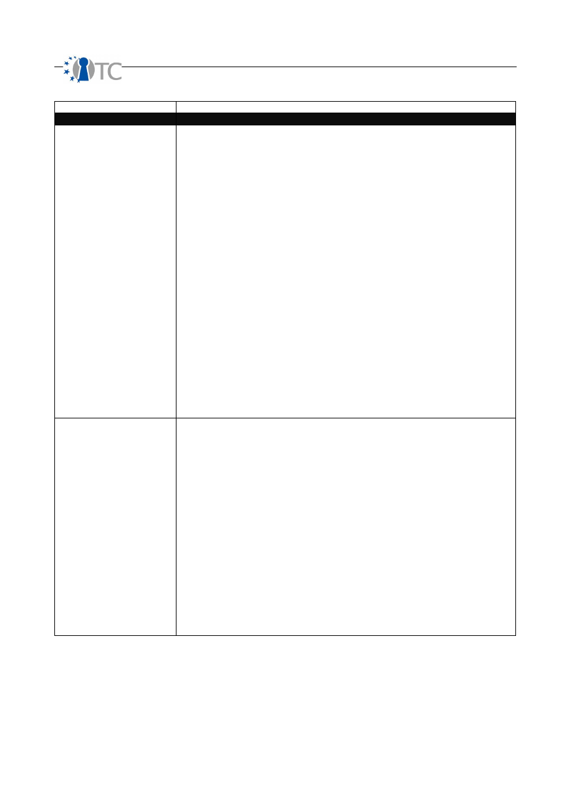
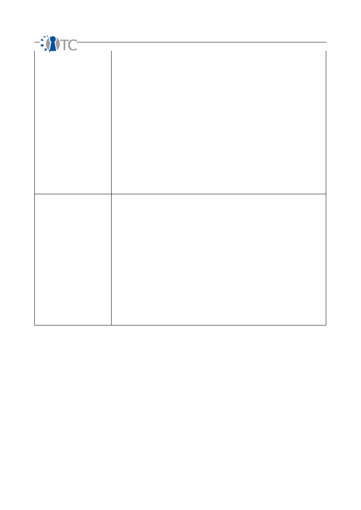
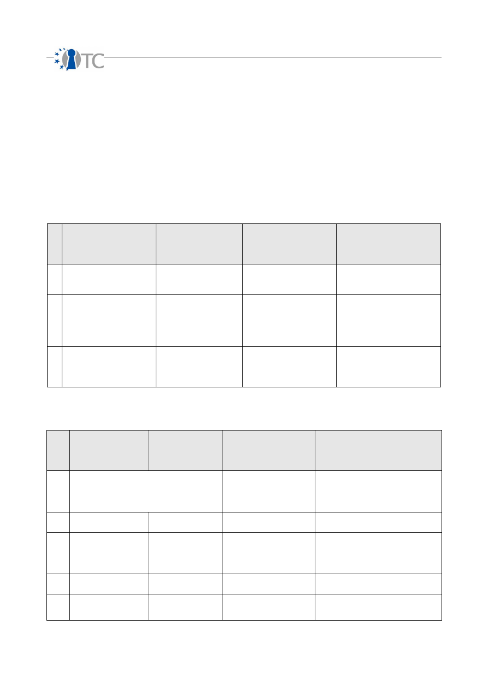
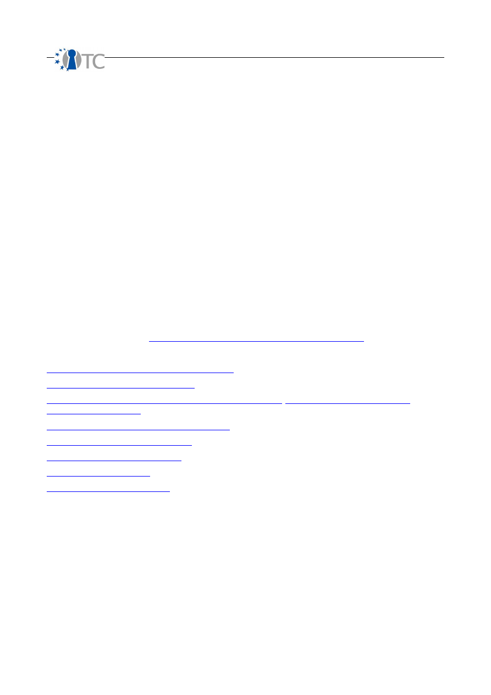

D07.2 V&V Report #2: Methodology definition,
analyses results and certification
Project number
IST-027635
Project acronym
Open_TC
Project title
Open Trusted Computing
Deliverable type
Report
Deliverable reference number
IST-027635/D07.02/1.2
Deliverable title
D07.2 V&V Report #2: Methodology
definition, analyses results and certification
WP contributing to the deliverable
WP07
Due date
Oct 2007 - M24
Actual submission date
4 December 2007
Responsible Organisation
CEA
Authors
Pascal Cuoq, Roman Drahtmüller, Ivan
Evgeniev, Vesselin Gueorguiev,
Pete Herzog,
Zoltan Hornak, Virgile Prevosto, Armand
Puccetti (eds.), Gergely Toth.
Abstract
This deliverable is an intermediate report on
the V&V activities undertaken in WP07. This
document present research and application
results. These deal with 1) the testing and
analysis of the WP07 targets, 2) tools for the
analysis of C and C++, 3) trust and security
metrics and methodology improvements,
and 4) certifiability of the XEN target.
Keywords
V&V, analysis, certification, testing, XEN
Dissemination level
Public
Revision
1.2
Instrument
IP
Start date of the
project
1
st
November 2005
Thematic Priority
IST
Duration
42 months
D07.2 V&V Report #2: Methodology definition, analyses results and certification 1.2
If you need further information, please visit our website
www.opentc.net
or contact
the coordinator:
Technikon Forschungs-und Planungsgesellschaft mbH
Richard-Wagner-Strasse 7, 9500 Villach, AUSTRIA
Tel.+43 4242 23355 –0
Fax. +43 4242 23355 –77
Email
coordination@opentc.net
The information in this document is provided “as is”, and no guarantee
or warranty is given that the information is fit for any particular purpose.
The user thereof uses the information at its sole risk and liability.
OpenTC Deliverable 07.02
2/100

D07.2 V&V Report #2: Methodology definition, analyses results and certification 1.2
Table of Contents
1 Summary.................................................................................................................... 6
2 Introduction ............................................................................................................... 7
2.1 Outline................................................................................................................... 7
2.2 Targets analyses.................................................................................................... 8
2.3 Structure of this report.......................................................................................... 8
3 Development of security and trust metrics.............................................................. 10
3.1 Overview.............................................................................................................. 10
3.2 Technical background.......................................................................................... 10
3.3 Security Metrics................................................................................................... 13
3.4 Trust metrics........................................................................................................ 25
3.5 Complexity........................................................................................................... 28
3.6 Testing Methodology Improvements.................................................................... 33
3.7 On-going work and future directions.................................................................... 34
4 Dynamic analysis of targets..................................................................................... 35
4.1 Overview.............................................................................................................. 35
4.2 Technical background........................................................................................... 36
4.3 Testing the IFX TSS............................................................................................... 39
4.3.2.1 Test summary................................................................................................. 45
4.3.2.2 Black-box SOAP testing................................................................................... 50
4.3.2.3 White-box testing............................................................................................ 53
4.4 Testing of XEN...................................................................................................... 58
4.5 On-going work and future directions..................................................................... 59
5 Static analysis of targets using AI............................................................................. 60
5.1 Overview.............................................................................................................. 60
5.2 Enhancements and support of Frama-C............................................................... 61
5.3 Research on the static analysis of C++ code...................................................... 64
5.4 Static Analysis of XEN using Coverity.................................................................. 72
5.5 Static Analysis of XEN using Frama-C.................................................................. 80
5.6 On-going work and future directions.................................................................... 87
6 Feasibility study: Xen and Common Criteria EAL5 evaluation.................................. 89
6.1 Overview.............................................................................................................. 89
6.2 Availability of documentation............................................................................... 90
6.3 Xen architecture and immediate implications.......................................................90
6.4 Common Criteria components.............................................................................. 92
6.5 Security Target properties.................................................................................... 95
6.6 Conclusion, discussion.......................................................................................... 97
6.7 Abbreviations........................................................................................................ 99
7 References.............................................................................................................. 100
OpenTC Deliverable 07.02
3/100

D07.2 V&V Report #2: Methodology definition, analyses results and certification 1.2
List of figures
Figure 1: Test process overview................................................................................... 37
Figure 2: Code snippet before instrumentation............................................................ 41
Figure 3: Modified code................................................................................................ 41
Figure 4: Hooking cycle................................................................................................ 42
Figure 5: SOAP transport level hooking........................................................................ 44
Figure 6: Processing a C++ file in Frama-C.................................................................. 67
Figure 7: Correspondence between the implementation and the ghost model............ 72
OpenTC Deliverable 07.02
4/100

D07.2 V&V Report #2: Methodology definition, analyses results and certification 1.2
Index of Tables
Table 1: Terminology.................................................................................................... 14
Table 2: Calculating OPSEC.......................................................................................... 15
Table 3: Calculating Controls........................................................................................ 17
Table 4: Calculating Security Limitations......................................................................22
Table 5: Calculating Actual Security............................................................................. 24
Table 6: Statistics on test categories............................................................................ 50
Table 7: SOAP message testing summary.................................................................... 51
Table 8: White-box testing summary............................................................................ 54
Table 9: Functions returning pointers........................................................................... 75
Table 10: Functions returning numerical values........................................................... 75
Table 11: Categories of potential bugs......................................................................... 82
Table 12: Bugs per categories...................................................................................... 87
Table 13: Bugs statistics............................................................................................... 87
Table 14: Differences between EAL4 and EAL5............................................................ 92
OpenTC Deliverable 07.02
5/100

D07.2 V&V Report #2: Methodology definition, analyses results and certification 1.2
1 Summary
OpenTC sets out to develop trusted and secure computing systems based on Trusted
Computing hardware and Open Source Software. This deliverable is the main output of
WP07 for the second yearly period, i.e. from November 2006 to October 2007. It
describes the main results of that period as well as work in progress of all partners of
WP07, i.e. of BME, CEA, ISECOM, SUSE and TUS. These results stem from various
research directions, and are directly related to the OS developments and their building
blocks. The main results are the development of testing and verification tools, their
application to OS components and the definition of an Open Source Security testing
Methodology.
In this report we only present the research and development results for that period,
but do not address any project management issues, for which the reader is invited to
open the activities report.
OpenTC Deliverable 07.02
6/100

D07.2 V&V Report #2: Methodology definition, analyses results and certification 1.2
2 Introduction
2.1 Outline
The initial and still actual main objectives of this WP is to evaluate the reliability and
security of the OS code issued by WP04 (that is a combination of a trusted XEN/L4
virtualisation layer and the Linux kernel) by means of extensive testing and static
analysis, guided by an proper methodology. The aim is to quantify the quality and
safety of this OS code, provide feedback to the developers of this code, and analyze
the possibility to certify (parts of) it at levels EAL5+.
Indeed, operating systems form a particular class of applications in terms of
development process and code that need particular adaptations in terms of
methodology, methods and tools. Starting from state of the art V&V techniques, we
studied how to analyze and test the OS code with a maximum of precision.
WP07 has done significant progress toward the objectives set initially. All support
tasks are focussed on the main objectives above and decomposed it into simpler
objectives. This has been done in several ways.
BME has improved the testing methodology by the addition of trust and security
metrics. Research has been done on how these metrics are applied to applications,
especially the WP07 targets. Also the complexity of the targets became a subject of
investigations, between several partners, aiming at understanding why the
hypervisors are quite difficult targets in terms of V&V.
BME has tested intensively the TSS, by running 135 000 test cases, that revealed
8
weaknesses and 1 remotely exploitable buffer overflow
. All of these have been
corrected and non-regression tests have confirmed this. Plans for testing the XEN core
hypercalls are made.
WP07 has analysed statically the XEN core, especially focussing on five hypercalls
designated by CUCL as the most critical. The Coverity Prevent tool has been used by
TUS and has produced over
300 potential bugs on these hypercalls and a total
of 1900 warnings on XEN versions 3.0.3, 3.0.4 and 3.1
. The Frama-C prototype
has also been applied by CEA to the same hypercalls of
XEN 3.0.3 and has
produced 170 potential errors amongst which 17 true errors.
These lists of
potential bugs are being filtered and pruned, to keep only real errors.
WP07 has also developed several tools: the Frama-C tool has been improved by CEA to
improve the precision and efficiency of the analyses and correct bugs and weaknesses
discovered along its usage. Another tool is being developed by TUS to analyse the
severity of potential bugs and perform slicings of the code to find out what portions of
code are influenced by given errors or variables.
ISECOM has developed the security testing methodology for security testing within the
OpenTC security testing activities as well as defined types of test activities and report
tables. After the definitions have been set during the first project year, WP07 has
studied how to quantify Trust and Security in a measurable manner. WP07 has also
OpenTC Deliverable 07.02
7/100

D07.2 V&V Report #2: Methodology definition, analyses results and certification 1.2
designed and implemented a security complexity measurement tool, SCARE, for static
C source code. WP07 has also studied means for teaching Trust as in rules applicable
to computer heuristics.
Certification is done on a given version of some product upon request. CC certification
has already been done on some OS, especially when they are safety or mission critical
(for instance, RTOS). But when dealing with open-source software, certification is
much harder. SUSE has investigated remaining CC criteria left after D07.1 and has
concluded about the impossibility to certify the entire XEN hypervisor due to the non-
observance of CC design criteria.
In co-operation with ISECOM and CEA, HPLB participated in investigation on additional
quantitative metrics for the OSSTMM and in the introductory training for this
methodology. HPLB co-defined the functional coverage and test set for the automated
black- and white box testing of XEN source code and modules. In co-operation with the
WP07 leader CEA and WP04 partner CUCL, HPLB contributed to a classification results
of automated testing to improve their the further development of the XEN code base.
WP07 has also followed closely the OS developments done by the WP04 and WP06
partners, to understand the nature of the developments and ensure that the WP07
support activities remain helpful to these developments.
2.2 Targets analyses
The WP07 activities provide support to the development activities of WP05 and WP06
and therefore has investigated which targets are important to address and support. It
was considered since the beginning of the project, that stable components are to be
addressed first, followed by components developed along OpenTC. It was also
considered that components are to be considered from the bottom layers (close to the
hardware) to the upper layer (central OS components). Hardware components, such as
the TPM or CPU are out of the scope of this project, as we deal with software items
only.
During the first year we have considered that the virtualization layers, namely XEN
and L4/Fiasco, are quite stable and merit that we V&V them. Below these, we find
BIOSes and boot loaders, that are critical components too, but that are not always
open source. We will address the bootloader OSLO during year 3. On top of the central
security TPM component, OpenTC has developed in WP03 the TSS, which has been
another target for V&V.
Year 2 has therefore concentrated on XEN and the TSS, and year 3 will consider parts
of the other items mentioned above.
2.3 Structure of this report
This report is structured along the technical research areas, presenting them in details
and giving the reader an insight into the techniques, and also presenting the main
results. Some detailed results, particularly those related to static analysis, are moved
to appendixes.
Whenever possible, each research task will be described using the following same
model:
•
Overview o
f the task, description of its aims and relationship with the original
OpenTC Deliverable 07.02
8/100
D07.2 V&V Report #2: Methodology definition, analyses results and certification 1.2
plans of WP07 and its SWP. This introduces the task and binds it to the first
workplan (see annex 1 of the OpenTC contract).
•
Technical background
: this contains basic technical elements for the reader
to understand the results. Indeed, some tasks are quite new, and some
material is given for the reader to understand where the progress lies.
•
A detailed description of the
research done
: this is the core part, highlighting
the main technical results.
•
On-going work
, to give some perspectives on what will be done during the
next project period and what research directions will be taken in that time
frame.
OpenTC Deliverable 07.02
9/100

D07.2 V&V Report #2: Methodology definition, analyses results and certification 1.2
3 Development of security and trust metrics
3.1 Overview
In the creation of a trusted system, one must trust the components of the system,
trust the operation of those components in an interactive scenario with each other and
with the user, and trust the integrity of the components alone or together operating
within a specific environment. No methodology has previously existed which could
allow this. No metrics have existed to describe this or allow for one system to be
compared to another or for operation within a particular environment.
Within OpenTC, ISECOM has been studying and defining the tests and metrics required
to accomplish this task. The first year, ISECOM devoted research to the completion of
a full security audit and unbiased metrics to facilitate the scientific, operational
security testing of OpenTC components as well as define which components must be
tested. The second year has focused on research towards defining Trust more
completely, trust tests, integrity tests, trust metrics, and security complexity metrics
of static source code.
As of this moment, ISECOM has published the penultimate draft of the Open Source
Security Testing Methodology Manual (OSSTMM) 3 which comprises of the full
requirements for completing an operational security audit and creating unbiased
metrics, the Source Code Analysis Risk Evaluation (SCARE) metric and tool for
calculating operational security complexity (aka “how complicated is it to secure this
software and how volatile is it?”) for the C programming language as well as the
means to apply it to others, tested three versions of the XEN source code, and
published a draft on defining and measuring Trust.
However, what we have completed is a small portion of what we have done. For this
year ISECOM has researched the following:
●
We ran various studies and seminars regarding the security testing metrics and
defined it mathematically to further its application.
●
We have researched an better Trust definition, the elements that form Trust and
a metric to represent it as an unambiguous amount.
●
We have mapped test types as required to run against the TC system to
measure its level of trust and security.
●
We have defined a process for measuring security complexity metrics in source
code, and have applied it to the C programming language.
●
A tool has been written to perform the tasks of the security complexity metric
and is being tested.
●
The progress of security complexity in XEN by measuring 3 versions of the
source code under SCARE.
●
The progress of security complexity in the Linux Kernel and how to accurately
measure it under SCARE.
3.2 Technical background
“Security Testing” is an umbrella term to encompass all forms and styles of security
tests from the intrusion to the hands-on audit. The application of the methodology
from this manual will not deter from the chosen type of testing.
OpenTC Deliverable 07.02
10/100

D07.2 V&V Report #2: Methodology definition, analyses results and certification 1.2
Practical implementation of this methodology requires defining individual testing
practices to meet the requirements defined here. This means that even when
following this methodology, the application of it, the technique, will reflect the type of
test one has chosen to do. However, regardless if the test type is blind, double blind,
gray box, double gray box, tandem, or reversal, the test must be indicative of the
target's ability to operate adequately.
Why test operations? Unfortunately, not everything works as configured. Not
everyone behaves as trained. Therefore the truth of configuration and training is in
the resulting operations.
This security testing methodology is designed on the principle of verifying the security
of operations. While it may not always test processes and policy directly, a successful
test of operations will allow for analysis of both direct and indirect data to study the
gap between operations and processes. This will show the size of the rift between
what management expects of operations from the processes they developed and what
is really happening. More simply put, the auditor's goal is to answer: how do current
operations work and how do they work differently from how management thinks they
work?
The security testing process is a discrete event test of a dynamic, stochastic system.
The target is a system, a collection of interacting and co-dependent processes, which
is also influenced by the stochastic environment it exists in. Being stochastic means
the behaviour of events in a system cannot be determined because the next
environmental state can only be partially but not fully determined by the previous
state. The system contains a finite, possibly extremely large, number of variables and
each change in variable presents an event and a change in state. Since the
environment is stochastic, there is an element of randomness and there is no means
for predetermining with certainty how all the variables will affect the system state. A
discrete test examines these states within the dynamic system at particular time
intervals. Monitoring operations in a continuous manner, as opposed to a discrete
one, would provide far too much information to analyse. Nor may it even be possible.
Even continuous tests however, require tracking each state in reference to time in
order to be analysed correctly.
A point of note is the extensive research available on change control for processes to
limit the amount of indeterminable events in a stochastic system. The auditor will
often attempt to exceed the constraints of change control and present “what if”
scenarios which the change control implementers may not have considered. A
thorough understanding of change control is essential for any auditor.
An operational security test therefore requires a thorough understanding of the testing
process, choosing the correct the type of test, recognizing the test channels and
vectors, defining the scope according to the correct index, and applying the
methodology properly.
Strangely, nowhere besides in security testing is the echo process considered the
defacto test. Like yelling into a cavernous area and awaiting the response, the echo
process requires agitating and then monitoring emanations from the target for
indicators of a particular state (secure or insecure, vulnerable or protected, on or off,
left or right). The echo process is of the cause and effect type of verification. The
OpenTC Deliverable 07.02
11/100

D07.2 V&V Report #2: Methodology definition, analyses results and certification 1.2
auditor makes the cause and analyzes the effect from the target. It is strange that
this is the primary means of testing something as critical as security because although
it makes for a very fast test, it is also highly prone to errors, some of which may be
devastating to the target. Consider that in a security test using the echo process it
means that should the target not respond then it is secure. Following that logic, a
target need only be not interactive to give the appearance of security.
If hospitals used the echo process to determine the health of an individual, it would
rarely help people but at least the waiting room time would be very short. Hospitals
however, like most other scientific industries, apply the Four Point Process which
includes a function of the echo process called the “interaction” as just one of the four
tests where the other three are: the “inquest” of reading emanations from the patient
(such as pulse, blood pressure, and brain waves), the “intervention” of changing and
stressing operating conditions (changing the patient's homeostasis, behavior, routine,
or comfort level), and the “induction” of examining the environment as to how it
affected the target (analyzing what the patient has interacted with: touched, eaten,
drank, breathed in, etc.). However in security testing, the majority of tests are of the
echo process alone. There is so much information lost in such one-dimensional testing
we should be thankful that the healthcare industry has evolved past just the “Does it
hurt if I do this?” manner of diagnosis.
The security test process in this methodology does not recommend the echo process
alone for reliable results. While the echo process may be used for certain, particular
tests where the error margin is small and the increased efficiency allows for time to be
moved to other time-intensive techniques, it is not recommended for tests outside of a
deterministic environment. The auditor must choose carefully when and under what
conditions to apply the echo process.
While many testing processes exist, the Four Point Process for security testing is
designed for optimum efficiency, accuracy, and thoroughness to assure test validity
and minimize errors in uncontrolled and stochatic environments. It is optimized for
real-world test scenarios outside of the lab. And while it also uses agitation, it differs
from the echo process in that it allows for determining more than one cause per effect
and more than one effect per cause.
The Four Points
1.
Induction
: establishing principle truths about the target from environmental
laws and facts.
2.
Inquest
: investigating target emanations.
3.
Interaction:
like
echo tests, standard and non-standard interactions with the
target to trigger responses.
4.
Intervention
: changing resource interactions with the target or between
targets.
Point 1, the Induction Phase
The auditor determines factual principles regarding the target from the environment
where the target resides. As the target will be influenced by its environment, its
behavior will be determinable within this influence. Where the target is not influenced
by its environment but should exists an anomaly to be understood.
Point 2, the Inquest Phase
OpenTC Deliverable 07.02
12/100

D07.2 V&V Report #2: Methodology definition, analyses results and certification 1.2
The auditor investigates the emanations from the target and any tracks or indicators
of those emanations. A system or process will generally leave a signature of its
existence through interactions with its environment.
Point 3, the Interaction Phase
The auditor will inquirey or agitate the target to trigger responses for analysis.
Point 4, the Intervention Phase
The auditor will intervene with the resources the target requires from its environment
or from its interactions with other targets to understand the extremes under which it
can continue operating adequately.
An audit according to this methodology will require that the full 4 Point Process
security tests are completed thoroughly. It will not be possible to follow the full
methodology with just the Interaction tests.
3.3 Security Metrics
The completion of a thorough security audit has the advantage of providing accurate
metrics on the state of security. The less thorough the audit means a less accurate
overall metric. Alternately, lesser skilled auditors and lesser experienced analysts will
also adversely affect the quality of the metric. Therefore, a successful metric of
security requires an audit which can be described as testing (measuring) from the
appropriate vectors required while accounting for inaccuracies and misrepresentations
in the test data and skills or experience of the security professionals performing the
audit. Faults in these requirements will result in lower quality measurements and false
security determinations.
This methodology refers to metrics as
Risk Assessment Values
(RAVs). While not a
risk assessment in itself, an audit with this methodology and the RAVs will provide the
factual basis for a more accurate and more complete risk assessment.
Overview
Appropriate security metrics require overcoming the bias of common metrics where
measurements are generally based on opinions. By not measuring the typical
qualitative assessment we can begin to factually quantify security. The further we can
remove the emotional element from the security test, the more accurately the metrics
will represent the situation.
Applying Risk Assessment Values
This methodology will define and quantify three areas within the scope which together
create the big picture defined as Actual Security as its relevance to the current and
real state of security. The big picture approach is to calculate separately as a
condensed value, each of the areas: Operations, Controls, and Limitations. The 3
values are combined and further condensed to form the fourth value, Actual Security,
to provide the big picture overview and a final metric for comparisons. Since the RAV
is relevant security information condensed it is extremely scalable. This allows for
comparable values between two or more scopes regardless of the number of targets,
vector, test type, or index where the index is the method of how individual targets are
OpenTC Deliverable 07.02
13/100
D07.2 V&V Report #2: Methodology definition, analyses results and certification 1.2
calculated. This means that with RAVs the security of a single target can be
realistically compared with 10,000 targets.
One important rule to applying these metrics is that Actual Security can only be
calculated per scope. A change in channel, vector, or index is a new scope and a new
calculation for Actual Security. However, multiple scopes can be calculated together
to create one Actual Security that represents a fuller vision of operational security.
For example, the audit will be made of internet-facing servers from both the internet
side and from within the perimeter network which they reside. That is 2 vectors. The
first vector is indexed by IP address and contains 50 targets. The second vector is
indexed by MAC address and is 100 targets. Once each audit is completed and metrics
are counted for each of the 3 areas, they can be combined into one calculation of 150
targets and the sums of each area. This will give a final Actual Security metric which
is much more complete for that perimeter network then either would be alone.
The use of the RAVs requires understanding this specific terminology and current
security research. This terminology provides a specific means to describe quantified
security. Without such exact definitions it is not possible to convey the meaning
without referring to the process of obtaining the numbers.
Table 1: Terminology
Term
Definition
Security
A form of protection where a physical separation is created between the assets and the
threat. In order to be secure, either the asset is physically removed from the threat or
the threat is physically removed from the asset. This includes elimination of either the
asset or the threat. This manual covers security from an operational perspective which is
verifying security measures in an operating or live environment.
Safety
A form of protection where the threat or its effects are controlled. In order to be safe,
the threat must be identified and the controls must be in place to assure the threat itself
or the effects of the threat are minimized to an acceptable level by the asset owner or
manager. This manual covers safety as “controls” which is the means to mitigate risk in
an operational or live environment.
Operations
The lack of security one must have to be interactive, useful, public, open, or available.
For example, limiting how a person buys goods or services from a store over a particular
channel, such as 1 door for going in and out, is a method of security within the store's
operations. Operations are defined by visibility, trusts, and accesses.
Controls
Impact and loss reduction controls. The assurance that the physical and information
assets as well as the channels themselves are protected from various types of invalid
interactions as defined by the channel. For example, insuring the store in the case of fire
is a control that does not prevent the inventory from getting damaged or stolen but will
pay out equivalent value for the loss. There are 10 controls. The first five controls are
Class A which control interactions. The five class B controls are relevant to controlling
procedures.
Limitations
This is the current state of perceived and known limits for channels, operations, and
controls as verified within the audit. For example, an old lock that is rusted and
crumbling used to secure the gates of the store at closing time has an imposed security
limitation where it is at a fraction of the protection strength necessary to delay or
withstand an attack. Determining that it is old and weak through visual verification in
this case is referred to as an identified limitation. Determining it is old and weak by
breaking it using 100 kg of force when a successful deterrent requires 1000 kg of force
shows a verified limitation.
OpenTC Deliverable 07.02
14/100
D07.2 V&V Report #2: Methodology definition, analyses results and certification 1.2
Operational Security
Operational Security also known as the scope’s Porosity is the first of the three RAV
factors that should be determined. It is initially measured as the sum of the scope’s
visibility, access and trust (
sum
OpSec
).
When we want to calculate the Risk Assessment Value it is however necessary to
determine the Operational Security base value,
base
OpSec
. The Operational Security
base value is given by the equation
base
OpSec
(
)
(
)
(
)
2
100
1
10
log
×
+
×
=
sum
OpSec
.
To measure the security of operations (OPSEC) requires the measurements of
visibility, trust, and access from the scope. The number of targets in the scope that
can be determined to exist by direct interaction, indirect interaction, or passive
emanations is its
visibility
. As visibility is determined, its value represents the
number of targets in the scope. Trust is any non-authenticated interaction to any of
the targets. Access is the number of interaction points with each target. The sum of
all three is the OPSEC Delta, which is the total number of openings within operations
and represents the total amount of operational security decreased within the target.
Table 2: Calculating OPSEC
OPSEC Categories
Descriptions
Visibility
The number of targets in the scope according to the scope. Count all targets by index
only once and maintain the index consistently for all targets. It is generally unrealistic to
have more targets visible then are targets in the defined scope however it may be
possible due to vector bleeds where a target which is normally not visible from one
vector is visible due to a misconfiguration or anomaly.
A HUMSEC audit employs 50 people however only 38 of them are interactive from the
test vector and channel. This would make a visibility of 38.
Trust
Count only each target allowing for unauthenticated interaction according to the
scope.
A HUMSEC audit may reveal that the help desk employees grant password resets for all
calls coming from internal phones without requesting identifying or authorizing
information. Within this context, each help desk employee who does this is counted as a
Trust for this scope. However, the same cannot be held true for external calls as in that
different scope, the one with the external to internal vector, these same help desk
employees are not counted as trusts.
Access
This is different from visibility where one is determining the number of existing targets.
Here the auditor must count each Access per unique interaction point per unique
probe.
In a PHYSSEC audit, a building with 2 doors and 5 windows which all open has an Access
of 7. If all the doors and windows are sealed then it is an Access of 0 as these are not
points where one can gain entry.
For a COMSEC audit of data networks, the auditor counts each port response as an
Access regardless how many different ways the auditor can probe that port. However,
if a service is not hosted at that port (daemon or an application) then all replies come
from the IP Stack. Therefore a server that responds with a SYN/ACK and service
interactivity to 1 of the TCP ports scanned and with a RST to the rest is not said to have
an access count of 65536 (including port 0) since 66535 of the ports respond with the
same response of RST which is from the kernel. To simplify, count uniquely only ports with
OpenTC Deliverable 07.02
15/100
D07.2 V&V Report #2: Methodology definition, analyses results and certification 1.2
service responses and IP Stack responses only when the probe initiates service
interactivity. A good example of a service activity over the IP Stack is an ICMP echo
response (PING reply).
With HUMSEC audits, this is much more simplified. A person who responds to a query
counts as an access with all types of queries (all the different questions you may ask or
statements made count as the same type of response on the same channel). Therefore
a person can only be an Access of 1 per channel and vector. Only a person who
completely ignores the request by not acknowledging the channel is not counted.
OPSEC Delta
Visibility + Trust + Access
The negative change in OPSEC protection.
Controls
The next step in calculating the RAV is to define the Loss Controls; the security
mechanisms put in place to protect the operations. First the sum of the Loss Controls,
sum
LC
, must be determined by adding together the 10 Loss Control categories. Now,
the Controls base value can be calculated as
base
LC
(
)
(
)
(
)
2
10
1
10
log
×
+
×
=
sum
LC
.
The
sum
LC
is multiplied by 10 here as opposed to 100 in the Operational Security
equation to account for the fact that all 10 Loss Controls are necessary to fully protect
1 visibility, access or trust.
Missing Controls
Given that the combination of the 10 Loss Controls combined balance the value of 1
OpSec loss (visibility, access, trust) it is necessary to determine the amount of Missing
Controls,
sum
MC
, in order to assess the value of the Security Limitations. This must be
done individually for each of the 10 Loss Control categories. For example, to
determine the Missing Controls for Authentication (
Auth
MC
) we must subtract the sum
of Authentication Controls (
sum
Auth
) of the scope from the
sum
OpSec
. The Missing
Controls can never be less than zero however.
The equation for determining the Missing Controls for Authentication (
Auth
MC
) is given
by
Auth
MC
=
sum
OpSec
-
sum
Auth
.
If
sum
OpSec
-
0
≤
sum
Auth
then
0
≈
Auth
MC
.
The resulting Missing Control totals for each of the 10 Loss Controls must then be
added to arrive at the total Missing Control value
(
sum
MC
).
Controls are the 10 loss protection categories in two categories, Class A (interactive)
and Class B (process). The Class A categories are authentication, indemnification,
subjugation, continuity, and resilience. The Class B categories are non-repudiation,
confidentiality, privacy, integrity, and alarm.
OpenTC Deliverable 07.02
16/100
D07.2 V&V Report #2: Methodology definition, analyses results and certification 1.2
Class A
●
Authentication is the control of interaction requiring having both credentials and
authorization where identification is required for obtaining both.
●
Indemnification is the control over the value of assets by law and/or insurance
to recoup the real and current value of the loss.
●
Subjugation is the locally sourced control over the protection and restrictions of
interactions by the asset responsible.
●
Continuity is the control over processes to maintain access to assets in the
events of corruption or failure.
●
Resilience is the control over security mechanisms to provide protection to
assets in the event of corruption or failure.
Class B
●
Non-repudiation prevents the source from denying its role in any interactivity
regardless whether or not access was obtained.
●
Confidentiality is the control for assuring an asset displayed or exchanged
between parties can be known outside of those parties.
●
Privacy is the control for the method of how an asset displayed or exchanged
between parties can be known outside of those parties.
●
Integrity is the control of methods and assets from undisclosed changes.
●
Alarm is the control of notification that OPSEC or any controls have failed, been
compromised, or circumvented.
Table 3: Calculating Controls
Controls Categories
Descriptions
Authentication
Count each instance of authentication required to gain access. This requires that
authorization and identification make up the process for the proper use of the
authentication mechanism.
In a PHYSSEC audit, if both a special ID card and a thumb print scan is required to gain
access then add two for authentication. However if access just requires one or the
other then only count one.
Indemnification
Count each instance of methods used to exact liability and insure compensation for all
assets within the scope.
A basic PHYSSEC example is a warning sign threatening to prosecute trespassers.
Another common example is property insurance. In a scope of 200 computers, a
blanket insurance policy against theft applies to all 200 and therefore is a count of 200.
However, do not confuse the method with the flaw in the method. A threat to prosecute
without the ability or will to prosecute is still an indemnification method however with a
limitation.
OpenTC Deliverable 07.02
17/100
D07.2 V&V Report #2: Methodology definition, analyses results and certification 1.2
Subjugation
Count each instance for access or trust in the scope which strictly does not allow for
controls to follow user discretion or originate outside of itself. This is different from being a
security limitation in the target since it applies to the design or implementation of
controls.
In a COMSEC data networks audit, if a login can be made in HTTP as well as HTTPS but
requires the user to make that distinction then it fails to count toward Subjugation.
However, if the implementation requires the secured mode by default such as a PKI-
based internal messaging system then it does meet the requirement of the Subjugation
control for that scope.
More simply, in HUMSEC, a non-repudiation process where the person must sign a
register and provide an identification number to receive a document is under
Subjugation controls when the provider of the document records the identification
number rather than having the receiver do so to eliminate the recording of a false
number with a false name.
Continuity
Count each instance for access or trust in the scope which assures that no interruption in
interaction over the channel and vector can be caused even under situations of total
failure. Continuity is the umbrella term for characteristics such as survivability, load
balancing, and redundancy.
In a PHYSSEC audit, it is discovered that if an entry way into a store becomes blocked no
alternate entry way is possible and customers cannot enter therefore the access does
not have Continuity.
In a COMSEC data networks audit, if a web server service fails from high-load then an
alternate web server provides redundancy so no interactions are lost. This access does
have Continuity.
Resilience
Count each instance for access or trust in the scope that does not fail open and without
protection or provide new accesses upon a security failure. In common language, it is
said to “fail securely”.
In a PHYSSEC audit, from 2 guards controlling access to a door if one is removed in any
way, then the door cannot be opened by the remaining guard then it has Resilience.
In a COMSEC data networks audit, if a web service requiring a login or password loses
communication with its authentication database, then all access should be denied
rather than permitted to have Resilience.
Non-repudiation
Count each instance for the access or trust that provides a non-repudiation mechanism
for each interaction to provide assurance that the particular interaction did occur at a
particular time between the identified parties. Non-repudiation depends upon
identification and authorization to be properly established for it to be properly applied
without limitations.
In a PHYSSEC audit, the Non-repudiation control exists if the entrance to a building
requires a camera with a biometric face scan to gain entry and each time it is used, the
time of entry is recorded with the ID. However, if a key-card is used instead, the Non-
repudiation control, requires a synchronized, time-coded camera to assure the record
of the card-users identity to avoid being a flawed implementation. If the door is tried
without the key card, not having the synchronized camera monitoring the door would
mean that not all interactions with the entryway have the Non-repudiation control and
therefore does not count for this control.
In a COMSEC data networks audit, there may be multiple log files for non-repudiation. A
port scan has interactions at the IP Stack and go into one log while interaction with the
web service would log to another file. However, as the web service may not log the
interactions from the POST method, the control is still counted however so is the security
limitation.
OpenTC Deliverable 07.02
18/100
D07.2 V&V Report #2: Methodology definition, analyses results and certification 1.2
Confidentiality
Count each instance for access or trust in the scope that provides the means to
maintain the content of interactions undisclosed between the interacting parties.
A typical tool for Confidentiality is encryption. Additionally, obfuscation of the content
of an interaction is also a type of confidentiality albeit a flawed one.
In HUMSEC, however, a method of Confidentiality may include whispering or using hand
signals.
Privacy
Count each instance for access or trust in the scope that provides the means to
maintain the method of interactions undisclosed between the interacting parties. While
“being private” is a common expression, the phrase is a bad example of what privacy is
as a loss control because it includes elements of confidentiality. As a loss control, when
something is done “in private” it means that only “the doing” is private but the content
of the interaction may not be.
A typical tool for Privacy is opaquing the interaction, having the interaction take place
outside of the Visibility of third parties. Confusion of the means of interaction as
obfuscation is another method of applying the Privacy control.
In HUMSEC, a method of Privacy may be simply taking the interaction into a closed
room away from other people. In movies, we see techniques to create the Privacy
control such as setting two of the same suitcases set side by side, some type of incident
to create confusion takes place and the two people switch the suitcases in seemingly
plain view.
Integrity
Count each instance for access or trust in the scope which can assure that the
interaction process and access to assets has finality and cannot be corrupted, hanged,
continued, redirected, or reversed without it being known to the parties involved.
Integrity is a change control process.
In COMSEC data networks, encryption or a file hash can provide the Integrity control
over the change of the file in transit.
In HUMSEC, segregation of duties and other corruption-reduction mechanism provide
Integrity control. Assuring integrity in personnel requires that two or more people are
required for a single process to assure oversight of that process. This includes that no
master access to the whole process exists. This can be no person with full access and no
master key to all doors.
Alarm
Count each instance for access or trust which has a record or makes a notification
when unauthorized and unintended porosity increases for the vector or restrictions and
controls are compromised or corrupted.
In COMSEC data networks, count each server and service which a network-based
intrusion detection system monitors. Or count each service that maintains a monitored
log of interaction. Access logs count even if they are not used to send a notification
alert immediately unless they are never monitored. However, logs which are not
designed to be used for such notifications, such as a counter of packets sent and
received, does not classify as an alarm as there is too little data stored for such use.
Controls Delta
Sum (all controls) *.1
The positive change over OPSEC protection. The 10 loss controls combined balance the
value of 1 OPSEC loss (access, visibility, or trust).
Security Limitations
The state of security in regard to known flaws and protection restrictions within the
scope are calculated as Limitations. To give appropriate values to each limitation
type, they must be categorized and classified. While any classification name or
number can be used, this methodology attempts to name them according to their
effects on OPSEC and Controls and does not regard them in a hierarchical format of
severity. Five classifications are designated to represent all types of limitations.
OpenTC Deliverable 07.02
19/100

D07.2 V&V Report #2: Methodology definition, analyses results and certification 1.2
1. Vulnerability is a flaw or error that: (a) denies access to assets for authorized
people or processes, (b) allows for privileged access to assets to unauthorized
people or processes, or (c) allows unauthorized people or processes to hide
assets or themselves within the scope.
2. Weakness is a flaw or error that disrupts, reduces, abuses, or nullifies
specifically the effects of the interactivity controls authentication,
indemnification, resistance, subjugation, and continuity.
3. Concern is a flaw or error that disrupts, reduces, abuses, or nullifies the effects
of the flow or execution of process controls non-repudiation, confidentiality,
privacy, integrity, and alarm.
4. Exposure is an unjustifiable action, flaw, or error that provides direct or indirect
visibility of targets or assets within the chosen scope channel of the security
presence.
5. Anomaly is any unidentifiable or unknown element which cannot be accounted
for in normal operatio
ns.
The concept that limitations are only limitations if they have no justification in
business or otherwise is false. A limitation is a limitation if it behaves in one of the
limiting factors as described here. A justification for a limitation is a risk decision and
one that is either met with a control of some kind even if that control is merely
acceptance. Risk decisions that accept the limitations as they are often come down
to: the damage a limitation can do does not justify the cost to fix or control the
limitation, the limitation must be so according to legislation, regulations, or policy, or a
conclusion that the threat does not exist or is likely for the particular limitation. Risk
justifications do not enter in the RAV metrics and all limitations should be counted as
discovered regardless if best practice, common practice, or legal practice denotes it as
not an acceptable risk. For the metric to be a true representation of the operational
security of the scope, for the ability of future risk assessments to be performed with
the metric as a basis, and for proper controls to be used to offset even those risks
deemed necessary for legislative reasons, the auditor must report the operational
security state as it is.
Another concept that must be taken into consideration is one of managing flaws and
errors in an audit. An audit will often uncover more than one flaw per target. The
auditor is to report the flaws per target and not the weak targets. These flaws may be
in the protection measures and controls themselves diminishing actual security. Each
flaw is to be rated as to what occurs when the flaw is invoked even if that must be
theoretical or of limited execution to restrict actual damages. Theoretical
categorization, where operation could not take place, is a slippery slope and should
really only be limited in the case of a medium to high risk of actual damages or where
recovery from damage is difficult or requires a long time period. When categorizing
the flaws, each flaw should be examined and calculated in specific terms of operation
at its most basic components. However, the auditor should be sure never to report a
“flaw within a flaw” where the flaws share the same component and same operational
effect.
The Security Limitations are individually weighted. The weighting of the
Vulnerabilities, Weaknesses and Concerns are based on a relationship between the
Porosity or
sum
OpSec
and the Loss Controls.
OpenTC Deliverable 07.02
20/100
D07.2 V&V Report #2: Methodology definition, analyses results and certification 1.2
The following value table is used to calculate the
sum
SecLim
variable, as
an intermediate step between the Security Limitation inputs and the
base
SecLim
variable, which is the Security Limitations basic input for the RAV equation.
Input
Weighted Value
Variables
Vulnerability
(
)
(
)
1
10
log
+
+
sum
sum
MC
OpSec
sum
MC
: sum of Missing Controls
Weakness
(
)
(
)
1
10
log
+
+
A
sum
MC
OpSec
A
MC
: sum of Missing Controls in
Control Class A
Concern
(
)
(
)
1
10
log
+
+
B
sum
MC
OpSec
B
MC
: sum of Missing Controls in
Control Class B
Exposure
( )
(
)
1
10
log
+
V
V
: sum of Visibility
Anomaly
(
)
(
)
1
10
log
+
+
MCa
V
V
: sum of Visibility
A
MC
: sum of Missing Controls in
Control Class A
Security Limitations Base
sum
SecLim
is then calculated as the aggregated total of each input multiplied by its
corresponding weighted value as defined in the table above. The Security Limitations
base equation is given as:
base
SecLim
(
)
(
)
(
)
2
100
1
10
log
×
+
×
=
sum
SecLim
OpenTC Deliverable 07.02
21/100

D07.2 V&V Report #2: Methodology definition, analyses results and certification 1.2
Table 4: Calculating Security Limitations
Limitations Categories
Auditing and Examples
Vulnerability
Count separately each flaw or error that that defies protections whereby a person or
process can access, deny access to others, or hide itself or assets within the scope.
In PHYSSEC, a vulnerability can be such things as a simple glass door, a metal gate
corroded by the weather, a door that can be sealed by wedging coins into the gap
between it and its frame, electronic equipment outdoors not sealed from pests such as
ants or mice, a bootable cd-rom drive on a PC, or a process that allows an employee to
take a trashcan large enough to hide or transport assets out of the scope.
In HUMSEC, a vulnerability can be a cultural bias that does not allow an employee to
question others who do not look like they belong there or a lack of training which leaves
a new secretary to give out business information classified for internal use only to a
caller.
In COMSEC data security, a vulnerability can be such things as a flaw in software that
allows an attacker to overwrite memory space to gain access, a computation flaw that
allows an attacker to lock the CPU into 100% usage, or an operating system that allows
enough data to be copied onto the disk until it itself can't operate anymore.
In COMSEC telecommunications, a vulnerability can be a flaw in the pay phone system
that allows sounds through the receiver mimic coin drops, a telephone box that allows
anyone to access anyone else's phone line, a voice mail system that provides messages
from any phone anywhere, or a FAX machine that can be polled remotely to resend the
last thing in memory to the caller's number.
In SPECSEC, a vulnerability can be hardware which can be overloaded and burnt out
by higher powered versions of the same frequency or a near frequency, a standard
receiver without special configuration which can access the data in the signal, a
receiver which can be forced to accept a third-party signal in place of the intended
one, or a wireless access point dropping connections from a nearby microwave oven.
Weakness
Count each flaw or error in the controls for interactivity: authentication, indemnification,
resistance, subjugation, and continuity.
In PHYSSEC, a weakness can be such things as a door lock that opens when a card is
wedged between it and the door frame, a back-up generator with no fuel, or insurance
that doesn't cover flood damage in a flood zone.
In HUMSEC, a weakness can be a process failure of a second guard to take the post of
the guard who runs after an intruder or a cultural climate within a company for allowing
friends into posted restricted spaces.
In COMSEC data security, a weakness can be such things as login that allows unlimited
attempts or a web farm with round-robin DNS for load balancing although each system
has also a unique name for direct linking.
In COMSEC telecommunications, a weakness can be a flaw in the PBX that has still the
default administration passwords or a modem bank for remote access dial-in which
does not log the caller numbers, time, and duration.
In SPECSEC, a weakness can be a wireless access point authenticating users based on
MAC addresses or a RFID security tag that no longer receives signals and therefore fails
“open” after receiving a signal from a high power source.
OpenTC Deliverable 07.02
22/100

D07.2 V&V Report #2: Methodology definition, analyses results and certification 1.2
Concern
Count each flaw or error in process controls: non-repudiation, confidentiality, privacy,
integrity, and alarm.
In PHYSSEC, a concern can be such things as a door lock mechanism whose operation
controls and key types are public, a back-up generator with no power meter or fuel
gage, an equipment process that does not require the employee to sign-out materials
when received, or a fire alarm not loud enough to be heard by machine workers with
ear plugs.
In HUMSEC, a concern can be a process failure of a guard who maintains the same
schedule and routine or a cultural climate within a company that allows employees to
use public meeting rooms for internal business.
In COMSEC data security, a concern can be the use of locally generated web server
certificates for HTTPS or log files which record only the transaction participants and not
the correct date and time of the transaction.
In COMSEC telecommunications, a concern can be the use of a FAX machine for
sending private information or a voice mail system that uses touch tones for entering a
PIN or password.
In SPECSEC, a concern can be a wireless access point using weak data encryption or an
infrared door opener that cannot read th sender in the rain.
Exposure
Count each unjustifiable action, flaw, or error that provides direct or indirect visibility of
targets or assets within the chosen scope channel of the security presence.
In PHYSSEC, an exposure can be such things as a window which allows one to view
assets and processes or an available power meter that shows how much energy a
building uses and its fluctuation over time.
In HUMSEC, an exposure can be a guard who allows all visitors to view the sign-in sheet
with all the other visitors listed on it or a company operator who informs callers that a
particular person is out sick or on vacation.
In COMSEC data security, an exposure can be a descriptive and valid banner about a
service (disinformation banners are not exposures) or a ICMP echo reply from a host.
In COMSEC telecommunications, an exposure can be an automated company
directory sorted by alphabet allowing anyone to cycle through all persons and numbers
or a FAX machine that stores the last dialed numbers.
In SPECSEC, an exposure can be a signal that disrupts other machinery announcing its
activity or an infrared device whose operation is visible by standard video cameras with
night capability.
OpenTC Deliverable 07.02
23/100
D07.2 V&V Report #2: Methodology definition, analyses results and certification 1.2
Anomaly
Count each unidentifiable or unknown element which cannot be accounted for in
normal operations, generally when the source or destination of the element cannot be
understood. An anomaly may be an earl sign of a security problem. Since unknowns
are elements which cannot be controlled for, a proper audit requires noting any and all
anomalies.
In PHYSSEC, an anomaly can be dead birds discovered on the roof a building around
communications equipment.
In HUMSEC, an anomaly can be questions a guard asks which may seem irrelevant to
either the job or standard small talk.
In COMSEC data security, an anomaly can be correct responses to a probe from a
different IP address than was probed or expected.
In COMSEC telecommunications, an anomaly can be a modem response from a
number that has no modem.
In SPECSEC, an anomaly can be a powerful and probably local signal that appears
once momentarily but not long enough to locate the source.
Actual Security
To measure the current state of operations with applied controls and discovered
limitations, a final calculation is required to define Actual Security. As implied by its
name this is the whole security value which combines the three values of operational
security, controls, and limitations to show the actual state of security.
The purpose of Actual Security is to condense the three combined values into a simple
metric value percentile that can be used to rate operational security effectiveness and
provide a method of comparison, scoring, and rating. This big picture approach is
effective because it does not simply show how one is prepared for threats but how
effective one's preparations are against threats.
Table 5: Calculating Actual Security
Actual Security
Categories
Descriptions
Actual Delta
The actual security delta is the sum of Op Sec Delta and Loss Controls Delta and
subtracting the Security Limitations Delta. The Actual Delta is useful for comparing
products and solutions by previously estimating the change (delta) the product or
solution would make in the scope.
Actual Security (Total)
Actual security is the true (actual) state of security provided as a hash of all three
sections and represented in a percentage where 100% represents a balance of controls
for interaction points to assets with no limitations.
The Actual Delta is useful for comparing products and solutions by previously
estimating the change (delta) the product or solution would make in the scope. We
can find the Actual Security Delta,
∆
ActSec
, with the formula:
base
base
base
ActSec
OpSec
LC
ActSec
−
−
=
∆
.
OpenTC Deliverable 07.02
24/100

D07.2 V&V Report #2: Methodology definition, analyses results and certification 1.2
To measure the current state of operations with applied controls and discovered
limitations, a final calculation is required to define Actual Security. As implied by its
name this is the whole security value which combines the three values of operational
security, controls, and limitations to show the actual state of security.
Actual Security
(total),
ActSec
, is the true state of security provided as a hash of all
three sections and represented in a percentage where 100% represents a balance of
controls for interaction points to assets with no limitations. The final RAV equation for
Actual Security is given as:
(
)
) (
)
(
(
)
)
(
((
) )
) )
(
(
01
.
100
01
.
100
100
×
×
+
−
−
×
×
−
+
−
=
base
base
base
base
base
base
ActSec
LC
OpSec
LC
OpSec
OpSec
ActSec
3.4 Trust metrics
AVIT, the Applied Verification for Integrity and Trust methodology will be both a sequence
of proper and thorough testing as well as a guide for the application of trust. A
methodology is useful reproducibility is a key component to a task. An open methodology
is necessary when the means of reproducing the results must be transparent. This
methodology, AVIT, the Applied Verification of Integrity and Trust, is a core component of
the OpenTC project because the test subject deals with privacy issues therefore the
methods of assuring the privacy issues are well tested requires a transparent, reproducible
test method. And a strong methodology of operation tests to standardize on should be
able to provide meaningful, unbiased metrics.
AVIT follows the work which has been developed for the OSSTMM (Open Source Security
Testing Methodology Manual) which is an open, security testing standard. The OSSTMM
provides the flexible security testing methodology which can be conformed under AVIT to
provide a security test of the full range of OpenTC components, the Linux OS on which it
resides, and the networked environment from multiple vectors. Thereby it will allow
OpenTC to quantify the integrity and ultimately the trust value of the OpenTC system.
Furthermore, it will provide a means and a gage by which the public can understand trust.
The basis to measuring Trust is to relate it to integrity, that thing that tells us something is
still “all right”. Integrity is a subset of security. It is a loss control and when applied will
determine if a change has occurred, intended or not. Integrity tests will need to be made
with the security tests to determine that the system as a whole is mostly free of holes (no
porosity) and that this condition does not change with the introduction of the various
OpenTC components. A high integrity score should validate that a strong chain of trust is
in place meaning that the point of origin and manufacture for each component in the
system, either software or hardware, can be identified, verified, and assured that no
change has taken place upon the intended, displayed, and non-malicious state of the
device.
This means in AVIT in order to show a trust level we need to prove its level of operational
integrity. And to prove it's level of integrity we need to determine its level of porosity, the
lack of security as a protection mechanism. Therefore the methodology provided by AVIT
will consist of:
OpenTC Deliverable 07.02
25/100

D07.2 V&V Report #2: Methodology definition, analyses results and certification 1.2
•
Four Point Process: the process of a thorough security test of operations,
•
Error Types: the process of recognizing causes of errors in operational tests,
•
Security Testing Methodology: the sequence of operational security tests,
•
Security Metrics: the means to calculate security,
•
Integrity Testing Methodology: the sequence of trust tests,
•
Trust Metrics: the means to calculate trust levels based on integrity and security
tests
The difficulty of this research and subsequent tests and metrics is in the nature of trust
and integrity to be closely tied to security but is also not affected by it should inaccuracies
or a high level of porosity be determined within it. Partly this has to do with human
psychology and the human irrationality when it comes to trust which is a known element
already profitably exploited in advertising, gambling, and politics. Therefore prior studies
in psychology, marketing, game theory, economics, and political science are evaluated
concurrently with the published articles within the project focus of Trusted Computing.
Current research has shown trust is obtainable quantitatively through the manipulation of
several elements known as the Trust Rules. The Trust Rules are:
1. Scope: the superset which contains the target (number of items/people/processes
to be trusted) and all of the components of those targets. This defines the scope of
trust and all inclusive parts of what needs to be trusted. This is like defining how
and where you see a tree where tree is the term for roots, branches, trunk, sap,
leaves, and all the other parts that make up a tree.
2. Symmetry of trust: the vector (direction) of the trust. It may be one way
(asymmetrical) and defined as to which way the trust must travel or both ways
(symmetrical).
3. Transparency: the level of visibility of all parts of the scope and the operating
environment of the target.
4. Control: the amount and direction of influence over the scope by the operator(s)
(also known as subjugation).
5. Historical consistency: the use of time as a measure of integrity by examining prior
operations and behaviours of the target.
6. Integrity: the amount and timely notice of change within the target.
7. Offsets of sufficient assurance: the comparison of the amount that which the value
placed within the target to the value of compensation to the operator or
punishment to the target should the trust fail.
8. Value of reward: the amount of gain for which trust in the target is sufficient for the
risk.
9. Chain of trust: the verification of the origins and influences over the target prior to
its current state. The further back to the origins of the target, the greater the
likelihood malicious players or foul play can be determined.
10. Adequacy of security, controls, and limitations: the amount and effectiveness of
protection levels can tell the actual state of the target's integrity.
A major part of the Trust Rules requires a documented and verifiable process chain
starting at the distributors and moving backwards in the process to the manufacturers,
coders, and architects. This part of the integrity test alone provides a huge challenge to
Open Source software developers as such a process is rarely followed properly. However,
without it, there can be only a very short chain of trust and the inability to fully verify
integrity.
Interestingly, security, is only a small part within those rules. Rational decision making
where it pertains to trust often does not include security because it is often mistakenly
confused for feelings of risk and can therefore be often satisfied by rule no. 8. This is
OpenTC Deliverable 07.02
26/100

D07.2 V&V Report #2: Methodology definition, analyses results and certification 1.2
notable when we compare trust with security. The need to gain security acceptance,
where acceptance is the same goal to achieve as in trust, they follow a pyramid notably
similar to the advertising pyramid which categorizes a linear acceptance of a message as
such:
1. Awareness --> 2. Comprehension --> 3. Conviction --> 4. Desire --> 5. Action
1. A need for security is communicated in the media or through sales channels which
generates awareness, often promoting fear, uncertainty, or doubt (Awareness).
2. The need for security is taught or mandated through regulations and legislation
(Comprehension).
3. Incentives and punishments are used to convince the need to apply the appropriate
security measures (Conviction).
4. Security becomes desired often as a result of a problem or an unfavorable risk
assessment (Desire).
5. Security is seen as necessary and applied with the motivation to maintain security
levels (Action).
However, in a trust model, there is no pyramid. It is not linear. There is no building
towards trust in a particular order or even an effort value system where it can be
determined that one level requires more effort than another. In methodology terms, it
appears irrational when calculated. A decision to trust therefore may be concluded by the
correct answer from one or more of the following questions which make up the Trust
Rules:
1. How many items/people/processes involved must the trust extend to?
2. For each item/people/processes is the trust symmetrical?
3. For each item/people/processes is the process or motives transparent?
4. Which items are under the control of self or a trusted person?
5. For each item/people/processes, how far back (the number of steps) to the last gap
is there an historical consistency to the process, people, or items?
6. Is the integrity of the item or process transparent for each?
7. What are the combined value of offsets of sufficient assurance (insurance or
leverage) such as reprisals, liens, or harmful penalties which have an acceptable
additional cost?
8. How great is the reward/win?
9. How far back (the number of steps) to the beginning or creation of each person,
process or item can the chain of trust be established and how many gaps exist in
each?
10. What is the value of the Security measures and controls (Safety) subtracting the
known Limitations? (see the OSSTMM for the calculation of this metric)
These questions are formed from the Trust Rules which define decision making built on
trust. There is no right or wrong answer here because the amount of requirements to trust
must only equal or surpass the perceived value of the potential loss. Therefore, only one
question must be answered correctly to have sufficient weight to trust.
The challengers of a trust metric say that it is part of human nature and cannot be
measured any more than love or hate, of which both can be irrational or impossible to
determine the causes thereof. However, where love and hate are emotions, trust is not. It
is like safety and security. It is a decision which we can feel for rather than an emotion
which we feel. What we find is that as a decision, trust is rationalized by considering some
or all of the Trust Rules, depending upon the skill and the experience of the decision
maker. But like all decisions, one can choose to go contrary to what the decision making
process suggests with varied consequences.
OpenTC Deliverable 07.02
27/100

D07.2 V&V Report #2: Methodology definition, analyses results and certification 1.2
To apply those questions into a metric is another part of this our goals. This is serving to
be a very difficult process because it is important to separate quantitative and qualitative
questions. And it is our goal to completely eliminate qualitative questions so as to remove
bias. Furthermore, as a simple calculation this can quickly fail when one introduces the
following resolution:
●
Not trusting is not an option.
This is when the only option is to trust because all others end very unfavourably.
Decisions based on ultimatums or intimacy are almost always irrational. Hence the plot of
many mainstream suspenseful dramas. The challenge is to give the hero a graceful way
out of a decision that in reality would spark an irrational action if it were even to get that
far. Most viewers would comment that the situation is not realistic or would have been
realistically solved at a much earlier stage by confronting the problem. However in a
similar situation where one must trust anyway even when the calculations don't balance
out with potential loss. It is human nature to disregard or forget the negative in order to
avoid drastic change, loss of life, or loss of lifestyle.
So for all the Rules of Trust can provide, the irrational decision made where trust is not an
option is a wild card to the equation. For example, in Trusted Computing, the operator
may not trust the computer no matter how great the reward may be because of
mainstream media and not of a personal distrust or a problem with the security or
integrity of the system. It is this final hurdle the OpenTC project must overcome.
The security test and integrity verification on the software code and components to be
adhered to the Linux system and hardware are to contribute to the final trust score. While
each of the trust tests themselves from the Trust Rules will facilitate the operator's
decision process towards an OpenTC system, such as the Demonstrator, on whether to
trust or not to trust, comes from the development team. As a methodology, these tests
together will make the facilitation of a trust decision easier as it will be a peer-reviewed
and standardized means of determining trust which can be applied to any other system
claiming to be a Trusted Computer. While this may seem to have little value beyond the
justly paranoid or the keepers of information secretive or even just not classified for public
knowledge, the markets for those with sensitive information now is quite large and the
buyers want transparency of what exactly is being bought and who had their hands on it.
The development team's awareness of the Trust Rules and how trust and is evaluated will
need to be reflected in the Demonstrator.
Ideally a methodology like AVIT should not only be part of the trust and integrity
documentation but also directly built into the system as a form of automatic re-
verification. Since the TSS itself should be able to maintain the current integrity and trust
level, it should be able to keep track of the whole chain for everything that it is a part of
and keep record of all authorized and accepted changes so the system can be transferred
while transferring the entire current trusted state. And without our ideals, there would
never be the contrast to know what one should strive for.
3.5 Complexity
The
Source Code Analysis Risk Evaluation
(SCARE) project is a study to create a
security complexity metric that will analyze source code and provide a realistic and
factual representation of the potential of that source code to create a problematic
binary. This metric will not say that the binary will be exploited nor does it do a static
analysis for known limitations like vulnerabilities. However it will flag code for a
OpenTC Deliverable 07.02
28/100
D07.2 V&V Report #2: Methodology definition, analyses results and certification 1.2
particular interaction type or control and allow the developer to understand which
OpSec holes are not protected even if it can't say the effectiveness of that protection.
The level of required effectiveness would require a much more sophisticated analysis
tool and not within the scope of this project at this time.
The goal of this study is to apply the ISECOM research findings for security metrics
represented as the Risk Assessment Values (RAVs) in OSSTMM 3.0. These metrics
define “security” as the separation between an asset and a threat. Therefore,
Operational Security (OpSec) are the “holes” in the wall of protection, Controls are the
patches for those holes, and Limitations are the problems and failures within OpSec
and the Controls.
More information regarding the RAVs and OSSTMM 3.0 Security Metrics can be found
at http://www.isecom.org/ravs.
This computation will provide a final SCARE value, like the RAV, where 100% is the
proper balance between controls to OpSec holes and no Limitations. Conversely, less
than that shows an imbalance where too few Controls protect OpSec holes or
Limitations in OpSec and Controls degrade the security.
Currently, SCARE is designed to work for any programming language. While this
methodology shows the C language, we need input and feedback from developers of
other languages to expand this further.
OPERATIONAL SECURITY
This is based on the conclusion of an elemental study that mainly shows there are only
two ways to steal something: take it yourself (represented by Access) or have
someone else do it for you (represented by Trust). The Visibility is the exposure or
knowledge that there is something to steal as for any theft, there is required the
opportunity to steal. Therefore OpSec is compromised by these three types. To
calculate OpSec, these 3 types are subtracted from the whole.
TYPE
DESCRIPTION
ITEMS
Visibility
The number of files that
the program puts or
changes on the disk
temporarily or
permanently collectively
during install and run-
time.
user data (applications), configuration files
(/etc), sensitive user data (e.g. credit card #,
software serial #), applications.
OpenTC Deliverable 07.02
29/100
D07.2 V&V Report #2: Methodology definition, analyses results and certification 1.2
Access
The number of places
where interactions
between a user and the
system may occur as
part of the
input/response
interaction between
them.
1. Direct input from the user from files, system
or sockets (gets, fgets, scanf, fscanf, fread, recv,
recvfrom, recvmsg).
2. Arguments to main() function.
3. Environment variables that the user may
configure and change.
4. Variables which can be passed directly to
some other functions, or the program can make
copies of those arguments and then manipulate
the copies.
5. Mathematical actions taken with user
provided values.
6. Some cases of read() syscall except when the
user cannot control the data such as when
reading from some device.
7. Memory allocation of user-controlled variables
8. Directories and file reads where the user may
read, create, change, or rename files (readdir,
stat, readlink, fstat, lstat).
Trust
The number of places
where interactions
between the system,
other programs on the
system, and the
program may occur as
part of the
input/response
interaction between
them or within the
program itself where
that input may be open
to manipulation by a
user.
1. Wherever the user may influence the
executed program or the behaviour of the other
endpoint (exec* , pipe).
2. The date and time.
3. Where the object is mapped into memory
(mmap).
CONTROLS
This is based on the 10 controls, of both process and interaction controls, which when
all combined can protect to the equivalent of operational security. Limitations in the
Controls themselves are counted under Limitations.
TYPE
DESCRIPTION
ITEMS
Authentication
The item interactions
are filtered or sanitized
according to identified
interaction types, role,
location, actions, users,
data types, or data
length.
Items for all these controls still require research
and input.
Indemnification
The item interactions
provide a warning to the
user according to legal
statutes.
OpenTC Deliverable 07.02
30/100
D07.2 V&V Report #2: Methodology definition, analyses results and certification 1.2
Resistance
The item interactions
are designed to fail in a
manner that does not
leave the program or
system unsecured in the
case of an attack via
survivability safeguards.
Subjugation
The item interactions
are controlled by the
program in the form of
selecting within the
range of specific,
selectable choices.
Continuity
The item interactions
are designed to continue
working regardless of
failure via a safeguard,
back-up, or redundancy.
Non-repudiation
Interaction with the item
is part of a process
which includes recording
the identification of the
user and the
interactions.
Confidentiality
Interaction with the item
is part of a process
which includes
protecting the data or
information between
them so as to be
understandable only to
intended parties,
systems or components.
Privacy
Interaction with the item
is part of a process
which includes
protecting the means of
the interaction so that
how the interaction
takes place is not
understandable nor
predictable to
unintended parties,
systems or components.
OpenTC Deliverable 07.02
31/100
D07.2 V&V Report #2: Methodology definition, analyses results and certification 1.2
Integrity
Interaction with the item
is part of a process
which includes a means
for which if the state or
meaning of records is
changed that change
becomes known.
Alarm
Interaction with the item
is part of a process
which includes alerting
the program owner
when attempts to
breach security or
circumvent controls are
detected.
LIMITATIONS
Where OpSec and Controls fail, these are the classifications for their limitations.
TYPE
DESCRIPTION
ITEMS
Vulnerability
The item contains
failures related to
providing access,
denying access, or
hiding information/data
within the confines of
the system.
Items for all these controls still require research
and input.
Weakness
The item contains
failures related to the
Interactive Controls of
Authentication,
Indemnification,
Resistance
Subjugation, and
Continuity.
Concern
The item contains
failures related to the
Process Controls of Non-
Repudiation,
Confidentiality, Privacy
Integrity, and Alarm.
Exposure
The item contains
failures related to
Visibility of assets
directly or indirectly of
interactions.
OpenTC Deliverable 07.02
32/100
D07.2 V&V Report #2: Methodology definition, analyses results and certification 1.2
Anomaly
The item does not follow
programming protocol
and will cause the
program to act in
strange or erratic ways.
Using SCARE on XEN
The XEN program is a vital piece of the OpenTC project. Since it's already been tested
for bugs and vulnerabilities by other project partners, we felt it was a good place to
verify the SCARE metrics because we could then compare them to the actual number
of problems found in XEN 3.1.0. We decided to test earlier versions as well to see the
trend if the code is getting harder to secure.
version
visibility
access
trust
delta
SCARE
3.0.3_0
1
314
28577
-41.74
58.26
3.0.4_1
1
311
31060
-42.21
57.79
3.1.0
1
316
33139
-42.57
57.43
The SCARE for XEN 3.1.0 source matches the large number of problems found in the
source code by other test partners. Further tests against Linux Kernel source code are
to follow.
The SCARE is getting progressively worse as more and more Trusts are added
(functions and variables manipulable through outside configurations and memory).
What is interesting is that if you remove the Trusts (assuming a controlled Trusted
Computer system where the user cannot access the places in memory or the
configuration files that XEN places) and look only at direct user interactions through
inputs then the code got better between 3.03 and 3.04 but then got worse again. XEN
is clearly getting more complex and the difference between each version here adds
thousands more interactive points to protect. Where complexity is not always bad for
security, in this case it clearly is.
3.6 Testing Methodology Improvements
Developing a testing methodology is a straight-forward act which requires thoroughly
understanding a subject and all the ways it must be tested to assure it against all the
ways it could fail. However, security and trust research are more like philosophies
than like hard sciences and just as Aristotle approached physics, we find we need to
approach somewhat abstract words like security and trust in a way that satisfies both
the “gut feeling” and the facts. Unfortunately, this means that the work done in the
investigation of these two topics must be one of evolution as everyone comes to be
comfortable with discarding the old views for the newer, more logical ones.
The improvements we must make to the testing methodologies therefore are to
constantly strive to prove that all tests have a basis in fact and remove that which has
none. This constant tweaking of the methodology will make it stronger but is also
difficult to get the world to accept in great leaps. Unfortunately the terminology alone
is holding back progress as marketing takes a firmer hold in the user minds than the
OpenTC Deliverable 07.02
33/100

D07.2 V&V Report #2: Methodology definition, analyses results and certification 1.2
underlying science can.
3.7 On-going work and future directions
Our on-going future work will be:
●
Improving the test methodology and metrics.
●
Improving the Trust metrics.
●
Finalizing AVIT.
●
Automating the search for Controls and Limitations for the C Programming
Language in the SCARE tool.
●
Applying SCARE to other programming and scripting languages
3.7.1 Applications of Trust metrics and AVIT
Applications of the security and trust metrics are very broad. The means to measure
how secure or trustworthy a computer is in a way that can be disseminated is already
a large leap of progress. Then to be able to repeat these tests by any other
independent lab or even to instil self-checks and diagnostics in computers to perform
these checks regularly and automatically will lend to an increased support of
transmitting or storing sensitive information using public access ways.
The need for AVIT to be free and open is one of transparency. In order for us to expect
to be trusted as developers of a trust test and metric, we need to be open to scrutiny.
AVIT is the open public project which will do this and perhaps quell the currently
unreasonable hysteria over trusted computing.
OpenTC Deliverable 07.02
34/100
D07.2 V&V Report #2: Methodology definition, analyses results and certification 1.2
4 Dynamic analysis of targets
4.1 Overview
As part of the general V&V efforts of WP7 in OpenTC, BME took on to carry out
dynamic analysis, i.e.
security testing on selected modules of OpenTC
. For this
purpose a separate sub-workpackage, SWP07a was devoted. The main goal was to
create test results in a systematic way, which could be later used for high-assurance
Common Criteria evaluations.
Within OpenTC the first year of SWP07a was devoted to the development of the
necessary
methodology and tool selection
. Based on an objective market analysis,
BME chose the automated security testing tool Flinder for the testing tasks.
In the second year then BME started to use the previously defined methodology to
carry out security testing of selected modules of the OpenTC architecture.
In
particular BME finished a complete test-correction-validation process on the
full API of the IFX TCG Software Stack (TSS) implementation
resulting in
approx. 135.000 executed test cases, several found potential vulnerabilities (including
remotely exploitable code execution) and a fully validated bugfixed TSS version in the
end.
As of the writing of this document, the plans for testing the second target, namely the
XEN hypervisor
are being carried out. Here the goal is to verify that even if attackers
can gain control over certain guest domains, other domains (both guests and
privileged ones) will be adequately isolated by XEN and thus vulnerabilities can be
contained to one virtualized compartment.
Since both CEA and TUS have also carried out evaluations of the XEN hypervisor, an
integrated evaluation report and bug list is going to be prepared (in year 3) to
demonstrate the collective strength of the different evaluation techniques used and to
facilitate the most effective bug fixing and ensure the planned assurance level of the
security-critical OpenTC modules.
Conclusions
Based on the results of the completed testing of the IFX TSS implementation, several
important conclusions can already be drawn:
●
For such complex systems large amounts of resources are needed to carry out a
systematic analysis of the implemented functionality. BME carried out approx.
135.000 tests for the coverage of the TSS API, from which only approx. 400
tests (less than 0.3 per cents) yielded potential problems.
Therefore,
automated solutions are needed
, which can reliably carry out such a big
task.
●
The results of the tests showed that a
utomated solutions can detect
security-critical programming bugs
, which could compromize the system
(e.g. by allowing remote code execution).
●
Finally,
we need to use verification and validation techniques
, since even
in this case, where a module was clearly designed and implemented with
security in mind
1
, human mistakes result in vulnerabilities, which could later be
1 During the testing of the IFX TSS implementation BME encountered a ratio of about 0.3 per
OpenTC Deliverable 07.02
35/100
D07.2 V&V Report #2: Methodology definition, analyses results and certification 1.2
used to break the Trusted Computing architecture.
4.2 Technical background
This section details the test process, which will be followed by BME for all testing tasks
within OpenTC. Then, a brief overview will be given on the test methodology, which
BME established during the first year of the project.
4.2.1 Test process
This section details the test process that BME followed during the execution of testing
of the OpenTC Infineon TSS implementation. The following steps constituted to the
test process:
1. As the first step Infineon specified the
Target of Evaluation
. The TSS
implementation was made available to BME in a state that was suitable for
testing.
2. BME created the
Test Plan
, which described the objectives for the testing and
the approach chosen for the evaluation. The Test Plan was reviewed by Infineon
(being the developer), by CEA (being the leader of workpackage 7 ‘Software
Development Support, Quality, Evaluation and Certification’) and by the
technical leader of the project. The review of the Test Plan was executed during
the telephone conference of January 9, 2007.
3. Based on the Target of Evaluation and the final Test Plan, BME executed the
planned tests. As a result BME created an
Internal Test Report
, which
contained the detailed descriptions of the test vectors created and the
assessments of the reactions of the Target of Evaluation. The Internal Test
Report was delivered to the appropriate parties on April 2, 2007.
Note: The Internal Test Report is strictly confidential. According to the Code of
Professional Ethics of ISACA [ISACA-CPE],
BME will report the found
vulnerabilities to the appropriate persons only
.
4. Based on the Internal Test Report Infineon carried out
bugfixing
and delivered
to BME an updated Target of Evaluation.
5. The
Updated Target of Evaluation
was subject to regression testing.
6. As the final step of the test process BME created the
Pubic Test Report
. This
report was again reviewed by Infineon, CEA and the technical leader of the
project.
The following figure depicts the schematics of the test process:
cents of failed test cases indicating potential vulnerabilities. This is a much smaller ratio that
what is typical in industrial automated security testing of security-critical products (e.g. DRM
systems), where the ratio is typically between 10 and 50 per cents.
OpenTC Deliverable 07.02
36/100
D07.2 V&V Report #2: Methodology definition, analyses results and certification 1.2
Figure 1: Test process overview
4.2.2 Test methodology
The danger of security-relevant programming bugs is especially high, as vulnerabilities
based on these contribute to crucial problems encountered every day in the IT world,
such as:
●
exploitable security holes
,
●
automatic
intrusions
into critical systems and
●
spreading of
viruses
.
The problem is that almost any application can be susceptible to attacks and may be
vulnerable. However, it is a common misbelief that combating these vulnerabilities is
impossible, since only a very small set of
typical security-relevant programming
bugs
is responsible for the vast majority of discovered and exploited vulnerabilities.
The aim of the
automated testing
carried out in the sub-workpackage SWP07a is
exactly this: executing test cases aiming to identify typical security-relevant
programming bugs in the software packages developed within the OpenTC project and
provide the results to the developers in the form of Test Reports.
OpenTC Deliverable 07.02
37/100
D07.2 V&V Report #2: Methodology definition, analyses results and certification 1.2
During the first year of the project BME evaluated 78 tools according to a generic
evaluation framework. Ultimately, the decision was to choose the tool called
Flinder
2
.
The main reasons for Flinder after the evaluation of the 78 tools was the following:
●
Provided by a reputable vendor (SEARCH-LAB Ltd.) with experiences in security
evaluation and testing.
●
The tool supported both black-box and white-box testing.
●
The tool was provided to BME free of charge to be used within the OpenTC
project.
●
The tool supported Linux.
●
The tool supported regression testing and individual re-run of selected test
cases.
●
It is possible to create custom modules for special protocols, test algorithms or
adaptation to special test environments.
In traditional secure software engineering the emphasis was on formal methods (which
could prove the correctness of the applied techniques) and on extensive testing.
Flinder’s aim is to provide additional help in testing by utilizing a new approach for
test vector generation. In our concept the ToE is communicating with an Input
Generator via messages. The idea is that Flinder modifies these messages in a man-in-
the-middle way. Naturally, this communication can be network-based, but a simple
application processing files can also be handled this way.
In order to be able to modify the input messages Flinder needs to know the
format
descriptions
of the different messages. Based on the message format descriptions
Flinder transforms each message into a general internal format (MSDL). Test specific
modifications (so-called
Test Logic
) will work on this internal representation. It is also
possible that one test case consists of not just one request-response message
exchange, but a series of messages (i.e. execution of a
protocol
) is needed to drive
the ToE into the targeted state, and Flinder has to modify the content of a message
only then. For testing such protocols, format description of each protocol message and
the protocol's state chart need to be given. For this reason Flinder maintains a
Protocol Statechart (based on a UML
state machine
), which can describe the series
of messages between the Input Generator and the ToE.
So Flinder can understand protocol steps and modify messages between the Input
Generator and the ToE, aiming to reveal the typical security-relevant programming
bugs. Generic testing algorithms are then used, that can work on the internal
representation of parsed messages.
For making testing more efficient, Flinder is capable of looking for different bugs
concurrently
(e.g. by testing different buffers simultaneously). Furthermore, by
taking the responses of the ToE into account, Flinder can employ reactive testing to
better identify potential security bugs.
Based on the availability of the source code Flinder can be used in black-box or white-
box scenarios:
●
In the
black-box mode
the ToE is evaluated in its executable form and Flinder
supplies the input directly to it and draws conclusions based on successful or
2 For more information about the Flinder tool, see www.flinder.hu.
OpenTC Deliverable 07.02
38/100

D07.2 V&V Report #2: Methodology definition, analyses results and certification 1.2
abnormal reaction (e.g. OS level signals).
●
White-box testing
could be applied if the source code is available. This way
Flinder could inject the modified test vectors into the tested functions directly,
this way it could achieve a much bigger coverage and Flinder could be involved
in the internal (source code level) testing of a product.
4.3 Testing the IFX TSS
The first target tested with the automated security testing methodology of SWP07a
was the Infineon TCG Software Stack (TSS).
For the testing of the IFX TSS BME completed the whole test process introduced
previously, i.e. tests were carried out according to the Test Plan resulting in an Internal
Test Report, then IFX carried out bugfixing based on support from BME and finally, the
corrections were verified by BME resulting in the Public Test Report, which could state
that all identified bugs have been corrected.
4.3.1 Test approaches
In order to evaluate the OpenTC Infineon TSS implementation BME carried out
automated security testing using the Flinder [FLINDER] tool. This tool was selected
after having carried out a comprehensive study in the field of automated security
testing utilities. The main properties of Flinder and the generic overview of testing will
be omitted from this document, they can be obtained from the Flinder Methodology
Overview [FLINDER-METH].
Two venues shall be considered for testing the TCG Software Stack (TSS)
implementation:
OpenTC Deliverable 07.02
39/100
D07.2 V&V Report #2: Methodology definition, analyses results and certification 1.2
●
The first approach targets the TCG Service Provider Interface (TSPI) and will
employ white-box testing techniques for vulnerability assessment. With this
method we will be able to evaluate integrity issues of the Service Provider (SP)
part of the TSS implementation.
●
Other means shall be used for the second approach: black-box testing of the
SOAP transport layer. This time, deeper levels of the TSS are scrutinized for
potential threats. The SOAP communication link is targeted because it is the
interface to the TSS Core Services (TCS) layer implemented in the coreserviced
process. This approach will enable to assess the security and interoperability of
the Core Service (CS) part of the TSS implementation.
4.3.1.1 White-box testing at API-level via fault injection
White-box testing shall be used to test the TSS implementation at the TSPI level. Of
the available interfaces TSPI is the highest level API provided by the TSS for
application programming. Systematically investigating the TSPI involves examining
every individual interface function looking for typical security-relevant programming
bugs. This target shall be reached by executing the following work phases:
1. Identification of TSPI functions with potential risks. Output of this phase: list of
function names containing all identified API members.
2. A database of test programs shall be compiled that exercise all functions
identified in the first phase.
3. Every test program shall be executed multiple times with a different set of
parameters on each run. Test program execution and modification of the test
OpenTC Deliverable 07.02
40/100
D07.2 V&V Report #2: Methodology definition, analyses results and certification 1.2
parameters shall be executed automatically by the Flinder tool. The Flinder
tool’s algorithms shall modify the input parameters in a systematic way, with
the aim to locate potential weaknesses in the implementation.
Test Program Hooking
In order to control the input parameters by Flinder the source code of the test
programs needs to be instrumented. The instrumentation allows Flinder to inject a
new set of parameters into the API functions. To accomplish this, additional care needs
to be taken by the inserted code to achieve synchronization of the test program and
the Flinder testing logic.
The following figures demonstrate a code snippet before and after instrumentation.
Tspi_Context_GetTpmObject(Context,&Tpm);
Tspi_GetPolicyObject(Tpm, TSS_POLICY_USAGE, &Policy);
Tspi_Policy_SetSecret(Policy, TSS_SECRET_MODE_PLAIN,
ownerpwdlen, ownerpwd);
Figure 2: Code snippet before instrumentation
The target of evaluation in this case is the
Tspi_Policy_SetSecret
function. The
parameters
ownerpwdlen
,
ownerpwd
are hooked for modification by Flinder.
Tspi_Context_GetTpmObject(Context,&Tpm);
Tspi_GetPolicyObject(Tpm, TSS_POLICY_USAGE, &Policy);
FlinderTypeA a; a.len = ownerpwdlen; a.buf = ownerpwd;
flinderHookA(a);
Tspi_Policy_SetSecret(Policy, TSS_SECRET_MODE_PLAIN,
a.len
,
(BYTE*)a.buf
);
Figure 3: Modified code
In this case hooking first involves the creation of a temporary variable holding all
function parameters. The
flinderHookA
function is then responsible for the hooking
operation. Since it accepts a structure as input parameter the target variables have to
be packed before transmission. The modified values can be retrieved from the input
structure after the hooking checkpoint is cleared.
Building on the synchronization and data flow mechanisms inserted into the test
programs the following test cycle shall be realized by Flinder:
OpenTC Deliverable 07.02
41/100
D07.2 V&V Report #2: Methodology definition, analyses results and certification 1.2
Figure 4: Hooking cycle
The hooking cycle can be described as follows: Flinder starts the Input Generator (IG).
The IG runs until the execution flow hits the hooking checkpoint. At the hooking point
the IG transfers the input data to Flinder and then waits for reply. Flinder processes
OpenTC Deliverable 07.02
42/100

D07.2 V&V Report #2: Methodology definition, analyses results and certification 1.2
the data and sends the test vector back to the IG. In each test case a different test
vector is created systematically by Flinder. The IG resumes execution with the
modified data. Meanwhile Flinder monitors the execution of
coreserviced
and also of
the Input Generator and determines whether they work normally or reached an
abnormal state. Flinder terminates the Input Generator, restarts
coreserviced
, sends
forceClear
command to TPM if any is necessary and starts a new cycle.
This procedure shall be executed for every API function identified.
4.3.1.2 Black-box testing at the SOAP connection level
The implementation of the TSS is realized by two communicating processes. Driving
the kernel device driver and providing the core service functionality is provided by the
coreserviced
demon server process. Two TSS layers are implemented in this process,
the TDDL and the TCS. The
coreserviced
process exposes a programming interface,
which clients can access through the SOAP protocol.
The remaining part of the TSS is implemented in the context of the client process.
That is only one layer, namely the TSP layer. TSP is built on top of TCS functionality,
which can be accessed through a TCS binding proxy inside the client’s address space.
Internally the binding proxy makes use of the SOAP protocol to access the services of
the core service demon in turn.
Not unlike the approach described in the previous section, testing will be performed
along similar lines than the hooking cycle. Flinder starts the Input Generator, but now
instead of hooking the source code, the SOAP communication is intercepted. A SOAP
proxy is inserted into the data stream, which channels data to Flinder. The intercepted
data is modified and then routed back to its original destination.
The main advantage of this procedure is that now the implementation of the
coreserviced
is under investigation, and not that of the client process. In this setting
malfunctions or crashes of the client process do not mask potential failures in the core
service demon.
OpenTC Deliverable 07.02
43/100
D07.2 V&V Report #2: Methodology definition, analyses results and certification 1.2
Figure 5: SOAP transport level hooking
OpenTC Deliverable 07.02
44/100
D07.2 V&V Report #2: Methodology definition, analyses results and certification 1.2
4.3.2 Testing Phase
This chapter describes the test cases that were actually executed during the first
automated security testing of the OpenTC Infineon TSS implementation. The approach
used for the test execution was already introduced in the previous section.
Note
: this section reflects the results of the initial security testing activity and thus
includes the references to all found security weaknesses. The next section –
Regression testing lists the results of the regression testing activity and discusses
how the found weaknesses have been eliminated.
4.3.2.1 Test summary
This section gives an overview on the results of the overall testing process. In the
following table we have listed all appointed TSPI functions and will give a status
indication about the finished testing process. The following categories have been set
up in order to simplify the table (the abbreviations will be used throughout the
document):
●
COMPLETED: All planned test cases were executed successfully, no security
weaknesses found.
●
PROBLEM
M
: Test case execution revealed security weaknesses, which might
have resulted also in incomplete test execution (i.e. ToE could not be reset and
restarted automatically).
●
NOSOAP: TSPI command did not generate SOAP messages, thus black-box
testing was not executed.
●
CANCELED: TSPI commands removed from the list of to-be-tested functions
according to the phone conference held on January 9, 2007.
●
NONCOMP: Test execution could not be completed due to problems in test
automation. Detailed description of the problem will be given later.
●
NOTIMP: TSPI function returned ‘not implemented’ error code in all evaluated
versions of the ToE.
OpenTC Deliverable 07.02
45/100
D07.2 V&V Report #2: Methodology definition, analyses results and certification 1.2
TEST SUMMARY
Area
Command
Status
Black-box
White-box
Common
Methods (7)
Tspi_SetAttribUint32
NOSOAP
COMPLETED
Tspi_GetAttribUint32
COMPLETED
COMPLETED
Tspi_SetAttribData
NOSOAP
COMPLETED
Tspi_GetAttribData
COMPLETED
COMPLETED
Tspi_ChangeAuth
PROBLEM M
COMPLETED
Tspi_GetPolicyObject
NOSOAP
COMPLETED
Context
Class
Methods (17)
Tspi_Context_Create
NOSOAP
COMPLETED
Tspi_Context_Close
COMPLETED
COMPLETED
Tspi_Context_Connect
COMPLETED
COMPLETED
Tspi_Context_FreeMemory
NOSOAP
COMPLETED
Tspi_Context_GetDefaultPolicy
NOSOAP
COMPLETED
Tspi_Context_CreateObject
COMPLETED
PROBLEM M
Tspi_Context_CloseObject
COMPLETED
COMPLETED
Tspi_Context_GetCapability
COMPLETED
COMPLETED
Tspi_Context_GetTPMObject
NOSOAP
COMPLETED
Tspi_Context_LoadKeyByBlob
COMPLETED
COMPLETED
Tspi_Context_LoadKeyByUUID
PROBLEM M
PROBLEM M
Tspi_Context_RegisterKey
NONCOMP(1)
NONCOMP(1)
Tspi_Context_UnregisterKey
NONCOMP(1)
PROBLEM M
Tspi_Context_DeleteKeyByUUID
NOTIMP
NOTIMP
Tspi_Context_GetKeyByUUID
NOTIMP
NOTIMP
Tspi_Context_GetKeyByPublicInfo
NOTIMP
NOTIMP
Tspi_Context_GetRegisteredKeysByUUID
NOTIMP
NOTIMP
Policy Class
Methods (3)
Tspi_Policy_SetSecret
NOSOAP
COMPLETED
Tspi_Policy_FlushSecret
NOSOAP
COMPLETED
Tspi_Policy_AssignToObject
NOSOAP
COMPLETED
OpenTC Deliverable 07.02
46/100
D07.2 V&V Report #2: Methodology definition, analyses results and certification 1.2
TEST SUMMARY
Area
Command
Status
Black-box
White-box
TPM Class
Methods (34)
Tspi_TPM_CreateEndorsementKey
NOTIMP
NOTIMP
Tspi_TPM_GetPubEndorsementKey
COMPLETED
COMPLETED
Tspi_TPM_TakeOwnership
NONCOMP(2)
NONCOMP(2)
Tspi_TPM_CollateIdentityRequest
NOTIMP
NOTIMP
Tspi_TPM_ActivateIdentity
NOTIMP
NOTIMP
Tspi_TPM_ClearOwner
NONCOMP(2)
NONCOMP(2)
Tspi_TPM_SetStatus
COMPLETED
COMPLETED
Tspi_TPM_GetStatus
COMPLETED
COMPLETED
Tspi_TPM_SelfTestFull
COMPLETED
COMPLETED
Tspi_TPM_CertifySelfTest
NOTIMP
NOTIMP
Tspi_TPM_GetTestResult
COMPLETED
COMPLETED
Tspi_TPM_GetCapability
COMPLETED
COMPLETED
Tspi_TPM_GetCapabilitySigned
NOTIMP
NOTIMP
Tspi_TPM_KillMaintenanceFeature
CANCELED
CANCELED
Tspi_TPM_LoadMaintenancePubKey
CANCELED
CANCELED
Tspi_TPM_CheckMaintenancePubKey
NOTIMP
NOTIMP
Tspi_TPM_GetRandom
COMPLETED
COMPLETED
Tspi_TPM_StirRandom
COMPLETED
COMPLETED
Tspi_TPM_AuthorizeMigrationTicket
COMPLETED
COMPLETED
Tspi_TPM_GetEvent
NOTIMP
NOTIMP
Tspi_TPM_GetEvents
NOTIMP
NOTIMP
Tspi_TPM_GetEventLog
NOTIMP
NOTIMP
Tspi_TPM_Quote
COMPLETED
COMPLETED
Tspi_TPM_PcrExtend
PROBLEM M
COMPLETED
Tspi_TPM_PcrRead
COMPLETED
COMPLETED
Tspi_TPM_DirWrite
NOTIMP
NOTIMP
Tspi_TPM_DirRead
NOTIMP
NOTIMP
Tspi_TPM_KeyControlOwner
NOTIMP
NOTIMP
Tspi_TPM_CreateRevocableEndorsementKey
NOTIMP
NOTIMP
Tspi_TPM_RevokeEndorsementKey
NOTIMP
NOTIMP
Tspi_TPM_Delegate_AddFamily
CANCELED
CANCELED
Tspi_TPM_Delegate_GetFamily
CANCELED
CANCELED
Tspi_TPM_Delegate_CreateDelegation
CANCELED
CANCELED
Tspi_TPM_Delegate_CacheOwnerDelegation
CANCELED
CANCELED
OpenTC Deliverable 07.02
47/100
D07.2 V&V Report #2: Methodology definition, analyses results and certification 1.2
TEST SUMMARY
Area
Command
Status
Black-box
White-box
Key Class
Methods (8)
Tspi_Key_LoadKey
COMPLETED
COMPLETED
Tspi_Key_GetPubKey
COMPLETED
COMPLETED
Tspi_Key_CertifyKey
NOTIMP
NOTIMP
Tspi_Key_CreateKey
PROBLEM M
COMPLETED
Tspi_Key_WrapKey
NOSOAP
COMPLETED
Tspi_Key_CreateMigrationBlob
COMPLETED
COMPLETED
Tspi_Key_ConvertMigrationBlob
COMPLETED
COMPLETED
Tspi_Key_CMKConvertMigration
NOTIMP
NOTIMP
Hash Class
Methods (5)
Tspi_Hash_Sign
COMPLETED
COMPLETED
Tspi_Hash_VerifySignature
NOSOAP
COMPLETED
Tspi_Hash_SetHashValue
NOSOAP
COMPLETED
Tspi_Hash_GetHashValue
NOSOAP
COMPLETED
Tspi_Hash_UpdateHashValue
NOTIMP
NOTIMP
Data Class
methods (4)
Tspi_Data_Bind
NOSOAP
COMPLETED
Tspi_Data_Unbind
COMPLETED
COMPLETED
Tspi_Data_Seal
PROBLEM M
COMPLETED
Tspi_Data_Unseal
COMPLETED
COMPLETED
PCR Class
Methods (6)
Tspi_PcrComposite_SelectPcrIndex
NOSOAP
COMPLETED
Tspi_PcrComosite_SetPcrValue
NOSOAP
COMPLETED
Tspi_PcrComposite_GetPcrValue
NOSOAP
COMPLETED
Tspi_PcrComposite_SelectPcrIndexEx
NOTIMP
NOTIMP
Tspi_PcrComposite_SetPcrLocality
NOTIMP
NOTIMP
Tspi_PcrComposite_GetCompositeHash
NOTIMP
NOTIMP
DER support
(2)
Tspi_EncodeDER_TssBlob
NOSOAP
COMPLETED
Tspi_DecodeBER_TssBlob
NOSOAP
COMPLETED
Non volatile
memory (2)
Tspi_NV_WriteValue
COMPLETED
COMPLETED
Tspi_NV_ReadValue
COMPLETED
COMPLETED
OpenTC Deliverable 07.02
48/100
D07.2 V&V Report #2: Methodology definition, analyses results and certification 1.2
TEST SUMMARY
Area
Command
Status
Black-box
White-box
Direct
Autonomous
Attestation
(7)
Tspi_DAA_IssueSetup
NOTIMP
NOTIMP
Tspi_DAA_IssueInit
NOTIMP
NOTIMP
Tspi_DAA_IssueCredential
NOTIMP
NOTIMP
Tspi_DAA_VerifySignature
NOTIMP
NOTIMP
Tspi_TPM_DAA_JoinInit
NOTIMP
NOTIMP
Tspi_TPM_DAA_JoinCreateDaaPubKey
NOTIMP
NOTIMP
Tspi_TPM_DAA_Sign
NOTIMP
NOTIMP
TEST SUMMARY
Status
Black-box
White-box
Summary
PROBLEM
M
5
3
COMPLETED
28
51
NONCOMP
4
3
NOSOAP
20
n/a
NOTIMP
31
31
CANCELED
6
6
Total
94
94
Note:
The table above is a summary of the initial testing of the TSS. During the
regression testing after the bugfixes of Infineon BME verified that all identified bugs
have been corrected.
Statistics
The following table gives a short summary about the ratio of the different categories.
Interesting information can be deduced from:
●
the ratio of the number of functions in all different groups, giving an insight
about the efficiency of the plan;
●
the ratio of the number of functions in the groups representing executed tests
(i.e. PROBLEM and COMPLETED), giving insight about the ratio of weaknesses in
a set of API functions; and
●
the ratio of test cases in the different groups, giving insight about the efficiency
of Flinder in finding weaknesses.
Category
Ratio of functions in
all categories
Ratio of functions
among those
having had tests
Ratio of executed
test cases
Black-
box
White-box Black-
box
White-
box
Black-
box
White-
box
PROBLEM
M
4.3%
3.2%
12.1%
5.6%
0.4%
0.2%
OpenTC Deliverable 07.02
49/100
D07.2 V&V Report #2: Methodology definition, analyses results and certification 1.2
COMPLETED
30.9%
54.3%
87.9%
94.4%
99.6%
99.8%
NONCOMP
4.3%
3.2%
NOSOAP
21.3%
n/a
NOTIMP
33.0%
33.0%
CANCELED
6.4%
6.4%
Table
6:
Statistics on test categories
Note on not completed tests
The following group of TSPI functions could not be tested:
(1) : test programs supplied with the ToE were not working, BME efforts to create
functional Input Generators did not succeed.
(2) : we could not automate the test execution for these functions, as each test case
would have needed manual TPM reset during the boot-up from the BIOS of the
PC.
4.3.2.2 Black-box SOAP testing
This section introduces the results of the black-box SOAP testing.
SOAP message testing summary
The table below summaries the results of the black-box SOAP testing. The testing
method was elaborated in depth previously.
Although only a relatively small subset of TSPI commands generate SOAP messages,
we could successfully find weaknesses with this method.
For the status indication of the table we use the categories already introduced:
●
COMPLETED: All planned test cases were executed successfully, no security
weaknesses found.
●
PROBLEM
M
: Test case execution revealed security weaknesses, which might
have resulted also in incomplete test execution (i.e. ToE could not be reset and
restarted automatically).
●
NONCOMP: Test execution could not be completed due to problems in test
automation. Detailed description of the problem will be given later.
OpenTC Deliverable 07.02
50/100
D07.2 V&V Report #2: Methodology definition, analyses results and certification 1.2
SOAP message
Status
Tested
software
version
Test cases
executed
Test cases
failed
AuthorizeMigrationKey
COMPLETED
2007.01.12.
1039
0
ChangeAuth
PROBLEM
M
2007.01.12.
1121
2
ConvertMigrationBlob
COMPLETED
2007.01.12.
1055
0
CreateMigrationBlob
COMPLETED
2007.01.12.
2041
0
CreateWrapKey
COMPLETED
2007.01.12.
1074
0
Extend
PROBLEM
M
2007.01.12.
1040
8
FlushSpecific
COMPLETED
2007.01.12.
2048
0
GetCapability
COMPLETED
2007.01.12.
1047
0
GetCapabilityTpm
COMPLETED
2007.01.12.
1045
0
GetPubKey
COMPLETED
2007.01.12.
1081
0
GetRandom
COMPLETED
2007.01.12.
1024
0
GetRegisteredKeyBlob
PROBLEM
M
2007.01.12.
178
49
GetTestResult
COMPLETED
2007.01.12.
1024
0
LoadKey2ByBlob
COMPLETED
2007.01.12.
1038
0
NV_ReadValue
COMPLETED
2007.01.12.
2204
0
NV_ReadValueAuth
COMPLETED
2007.01.12.
3072
0
NV_WriteValue
COMPLETED
2007.01.12.
2067
0
NV_WriteValueAuth
COMPLETED
2007.01.12.
2067
0
OIAP
COMPLETED
2007.01.12.
1024
0
OSAP
PROBLEM
M
2007.01.12.
1320
190
OwnerClear
NONCOMP (2)
2007.01.12.
0
0
OwnerSetDisableState
COMPLETED
2007.01.12.
2048
0
PcrRead
COMPLETED
2007.01.12.
1024
0
Quote
COMPLETED
2007.01.12.
2056
0
ReadPubEk
COMPLETED
2007.01.12.
19
0
Seal
COMPLETED
2007.01.12.
59
0
SelfTestFull
COMPLETED
2007.01.12.
1024
0
SetCapability
COMPLETED
2007.01.12.
1068
0
StirRandom
COMPLETED
2007.01.12.
20
0
TakeOwnership
NONCOMP (2)
2007.01.12.
0
0
UnBind
COMPLETED
2007.01.12.
1097
0
UnSeal
COMPLETED
2007.01.12.
1039
0
Sign
COMPLETED
2007.01.12.
1043
0
Summary
38106
249
Table 7:
SOAP message testing summary
Note on not completed tests
The following group of TSPI functions could not be tested:
(2) : we could not automate the test execution for these functions, as each test case
would have needed manual TPM reset during the boot-up from the BIOS of the
OpenTC Deliverable 07.02
51/100
D07.2 V&V Report #2: Methodology definition, analyses results and certification 1.2
PC.
Security problems identified during black-box testing
This section lists the weaknesses found during black-box testing. It has to be
emphasized that the target of the security testing was to find weaknesses, thus this
document will give relatively small emphasize on the correct implementation. Thus,
although the greater part of this document deals with problems, the Target of
Evaluation behaved correctly in the vast majority of tests.
ID
OPENTC-RACK51-54-20070328_BB-G008 and
OPENTC-RACK51-54-20070328_BB-G009
Name
OSAP
Integer Overflow
Affected software version 2007.01.12 and 2007.03.16
Description
coreserviced
shutdown upon receipt of Flinder-
modified SOAP message
ID
OPENTC-RACK51-54-20070328_BB-G056
Name
ChangeAuth
Integer Overflow
Affected software version 2007.01.12 and 2007.03.16
Description
coreserviced
shutdown upon receipt of Flinder-
modified SOAP message
ID
OPENTC-RACK51-54-20070328_BB-G109
Name
Extend
Buffer Overflow
Affected software version 2007.01.12 and 2007.03.16
Description
coreserviced
would not respond further requests upon
receipt of Flinder-modified SOAP message
ID
OPENTC-RACK51-54-20070328_BB-G136
Name
GetRegisteredKeyBlob
Integer Overflow
Affected software version 2007.01.12
Description
coreserviced
shutdown upon receipt of Flinder-
modified SOAP message
ID
OPENTC-RACK51-54-20070328_BB-G137
Name
GetRegisteredKeyBlob
Buffer Overflow
Affected software version 2007.01.12
Description
coreserviced
shutdown upon receipt of Flinder-
modified SOAP message
OpenTC Deliverable 07.02
52/100
D07.2 V&V Report #2: Methodology definition, analyses results and certification 1.2
4.3.2.3 White-box testing
This section introduces the results of the fault-injection-based white-box testing.
White-box testing summary
The table below summaries the results of the white-box testing. The testing method
was elaborated in depth previously.
For the status indication of the table we use the categories introduced previously:
●
COMPLETED: All planned test cases were executed successfully, no security
weaknesses found.
●
PROBLEM
M
: Test case execution revealed security weaknesses, which might
have resulted also in incomplete test execution (i.e. ToE could not be reset and
restarted automatically).
●
NONCOMP: Test execution could not be completed due to problems in test
automation. Detailed description of the problem will be given later.
Command
Status
Tested
software
version
Test cases
executed
Test
cases
failed
Tspi_SetAttribUint32
COMPLETED 2007.01.12.
4096
0
Tspi_GetAttribUint32
COMPLETED 2007.01.12.
3072
0
Tspi_SetAttribData
COMPLETED 2007.01.12.
3087
0
Tspi_GetAttribData
COMPLETED 2007.01.12.
3072
0
Tspi_ChangeAuth
COMPLETED 2007.01.12.
3072
0
Tspi_GetPolicyObject
COMPLETED 2007.01.12.
1024
0
Tspi_Context_Create
COMPLETED 2007.01.12.
0
0
Tspi_Context_Close
COMPLETED 2007.01.12.
1024
0
Tspi_Context_Connect
COMPLETED 2007.01.12.
1042
0
Tspi_Context_FreeMemory
COMPLETED 2007.01.12.
1040
0
Tspi_Context_GetDefaultPolicy
COMPLETED 2007.01.12.
1024
0
Tspi_Context_CreateObject
PROBLEM
M
2007.01.12.
70
70
Tspi_Context_CloseObject
COMPLETED 2007.01.12.
1024
0
Tspi_Context_GetCapability
COMPLETED 2007.01.12.
1047
0
Tspi_Context_GetTPMObject
COMPLETED 2007.01.12.
1024
0
Tspi_Context_LoadKeyByBlob
COMPLETED 2007.01.12.
1038
0
Tspi_Context_LoadKeyByUUID
PROBLEM
M
2007.01.12.
112
83
Tspi_Context_RegisterKey
NONCOMP(1) 2007.01.12.
0
0
Tspi_Context_UnregisterKey
PROBLEM
M
(1) 2007.01.12.
496
1
Tspi_Policy_SetSecret
COMPLETED 2007.01.12.
1043
0
Tspi_Policy_FlushSecret
COMPLETED 2007.01.12.
1024
0
Tspi_Policy_AssignToObject
COMPLETED 2007.01.12.
2048
0
Tspi_TPM_GetPubEndorsementKey
COMPLETED 2007.03.16.
3370
0
OpenTC Deliverable 07.02
53/100
D07.2 V&V Report #2: Methodology definition, analyses results and certification 1.2
Tspi_TPM_TakeOwnership
NONCOMP(2)
0
0
Tspi_TPM_ClearOwner
NONCOMP(2)
0
0
Tspi_TPM_SetStatus
COMPLETED 2007.01.12.
2048
0
Tspi_TPM_GetStatus
COMPLETED 2007.01.12.
1024
0
Tspi_TPM_SelfTestFull
COMPLETED 2007.01.12.
1024
0
Tspi_TPM_GetTestResult
COMPLETED 2007.01.12.
1024
0
Tspi_TPM_GetCapability
COMPLETED 2007.01.12.
3072
0
Tspi_TPM_GetRandom
COMPLETED 2007.01.12.
1024
0
Tspi_TPM_StirRandom
COMPLETED 2007.01.12.
15
0
Tspi_TPM_AuthorizeMigrationTic
ket
COMPLETED 2007.01.12.
2048
0
Tspi_TPM_Quote
COMPLETED 2007.01.12.
4394
0
Tspi_TPM_PcrExtend
COMPLETED 2007.01.12.
3393
0
Tspi_TPM_PcrRead
COMPLETED 2007.01.12.
1024
0
Tspi_Key_LoadKey
COMPLETED 2007.01.12.
2048
0
Tspi_Key_UnloadKey
COMPLETED 2007.01.12.
1024
0
Tspi_Key_GetPubKey
COMPLETED 2007.01.12.
1024
0
Tspi_Key_CreateKey
COMPLETED 2007.01.12.
3072
0
Tspi_Key_WrapKey
COMPLETED 2007.01.12.
3072
0
Tspi_Key_CreateMigrationBlob
COMPLETED 2007.01.12.
2063
0
Tspi_Key_ConvertMigrationBlob
COMPLETED 2007.01.12.
2079
0
Tspi_Hash_Sign
COMPLETED
2007.03.16
2048
0
Tspi_Hash_VerifySignature
COMPLETED
2007.03.16
1039
0
Tspi_Hash_SetHashValue
COMPLETED
2007.03.16
19
0
Tspi_Hash_GetHashValue
COMPLETED
2007.03.16
1024
0
Tspi_Data_Bind
COMPLETED 2007.01.12.
2067
0
Tspi_Data_Unbind
COMPLETED 2007.01.12.
2048
0
Tspi_Data_Seal
COMPLETED 2007.01.12.
3089
0
Tspi_Data_Unseal
COMPLETED 2007.01.12.
2048
0
Tspi_PcrComposite_SelectPcrInde
x
COMPLETED 2007.01.12.
2048
0
Tspi_PcrComposite_SetPcrValue
COMPLETED 2007.01.12.
1043
0
Tspi_PcrComposite_GetPcrValue
COMPLETED 2007.01.12.
2048
0
Tspi_NV_WriteValue
COMPLETED 2007.01.12.
2067
0
Tspi_NV_ReadValue
COMPLETED 2007.01.12.
3072
0
Tspi_NV_DefineSpace
COMPLETED 2007.01.12.
3072
0
Tspi_DecodeBER_TssBlob
COMPLETED 2007.03.16.
1039
0
Tspi_EncodeDER_TssBlob
COMPLETED 2007.03.16.
1039
0
Summary
97131
154
Table
8:
White-box testing summary
OpenTC Deliverable 07.02
54/100
D07.2 V&V Report #2: Methodology definition, analyses results and certification 1.2
Note on not completed tests
The following group of TSPI functions could not be tested:
(1) : test programs supplied with the ToE were not working, BME efforts to create
functional Input Generators did not succeed.
(2) : we could not automate the test execution for these functions, as each test case
would have needed manual TPM reset during the boot-up from the BIOS of the
PC.
Security problems identified during white-box testing
This section lists the weaknesses found during white-box testing.
ID
OPENTC-RACK51-54-20070328_WB-G034
Name
Tspi_Context_UnregisterKey
Integer Overflow
Affected software version 2007.01.12
Description
coreserviced
exited after having issued this API
function
ID
OPENTC-RACK51-54-20070328_WB-G127
Name
Tspi_Context_LoadKeyByUUID
Integer Overflow
Affected software version 2007.01.12
Description
coreserviced
exited after having issued this API
function
ID
OPENTC-RACK51-54-20070328_WB-G164 and
OPENTC-RACK51-54-20070328_WB-G165
Name
Tspi_Context_CreateObject
Integer Overflow
Affected software version 2007.01.12
Description
coreserviced
exited after having issued this API
function
4.3.3 Regression testing
After having delivered the Internal Test Report to Infineon, Infineon carried out
bugfixing on the Target of Evaluation in cooperation with BME. Several intermediate
versions of the ToE were evaluated during this period, and in the end BME could verify
that the last evaluated version (of 2007.07.25) did not contain any of the found
weaknesses. By correcting all found issues, Infineon produced a TSS implementation
that successfully passed the requirements set forth in this document verified with the
help of the automated security testing tool Flinder.
In the following sections descriptions will be given on how each found weakness was
addressed.
OpenTC Deliverable 07.02
55/100
D07.2 V&V Report #2: Methodology definition, analyses results and certification 1.2
4.3.3.1 Security problems identified during black-box testing
This section describes how the issues found via black-box testing were addressed.
ID
OPENTC-RACK51-54-20070328_BB-G008 and
OPENTC-RACK51-54-20070328_BB-G009
Name
OSAP
Integer Overflow
Affected software version 2007.01.12 and 2007.03.16
Corrected software
version
n/a (verified to be a false positive)
Method of correction
The weakness was due to a debug-mode assert of the
ToE. Release mode versions of the ToE correctly
handled such malformed messages and return with the
relevant TSS error message and error status.
Note: always use the release version of the ToE in a
production environment in order to ensure that this
weakness cannot be exploited.
ID
OPENTC-RACK51-54-20070328_BB-G056
Name
ChangeAuth
Integer Overflow
Affected software version 2007.01.12 and 2007.03.16
Corrected software
version
n/a (verified to be a false positive)
Method of correction
The weakness was due to a debug-mode assert of the
ToE. Release mode versions of the ToE correctly
handled such malformed messages and returned with
the relevant TSS error message and error status.
Note: always use the release version of the ToE in a
production environment in order to ensure that this
weakness cannot be exploited.
ID
OPENTC-RACK51-54-20070328_BB-G109
Name
Extend
Buffer Overflow
Affected software version 2007.01.12 and 2007.03.16
Corrected software
version
2007.07.25
Method of correction
Infineon implemented adequate length checking on the
respective parameter of the Extend message, which
correctly handled malformed messages and returned
with the relevant TSS error message and error status.
Note: always use the 2007.07.25 or later versions of the
ToE in a production environment in order to ensure that
this weakness cannot be exploited.
ID
OPENTC-RACK51-54-20070328_BB-G136
Name
GetRegisteredKeyBlob
Integer Overflow
OpenTC Deliverable 07.02
56/100
D07.2 V&V Report #2: Methodology definition, analyses results and certification 1.2
Affected software version 2007.01.12
Corrected software
version
2007.03.16
Method of correction
This weakness was only present in the 2007.01.12
version of the TSS. Later versions were not affected.
Note: always use the 2007.03.16 or later versions of the
ToE in a production environment in order to ensure that
this weakness cannot be exploited.
ID
OPENTC-RACK51-54-20070328_BB-G137
Name
GetRegisteredKeyBlob
Buffer Overflow
Affected software version 2007.01.12
Corrected software
version
2007.03.16
Method of correction
This weakness was only present in the 2007.01.12
version of the TSS. Later versions were not affected.
Note: always use the 2007.03.16 or later versions of the
ToE in a production environment in order to ensure that
this weakness cannot be exploited.
4.3.3.2 Security problems identified during white-box testing
This section describes how the issues found via white-box testing were addressed.
ID
OPENTC-RACK51-54-20070328_WB-G034
Name
Tspi_Context_UnregisterKey
Integer Overflow
Affected software version 2007.01.12
Corrected software
version
2007.03.16
Method of correction
This weakness was only present in the 2007.01.12
version of the TSS. Later versions were not affected.
Note: always use the 2007.03.16 or later versions of the
ToE in a production environment in order to ensure that
this weakness cannot be exploited.
ID
OPENTC-RACK51-54-20070328_WB-G127
Name
Tspi_Context_LoadKeyByUUID
Integer Overflow
Affected software version 2007.01.12
Corrected software
version
2007.03.16
Method of correction
This weakness was only present in the 2007.01.12
version of the TSS. Later versions were not affected.
Note: always use the 2007.03.16 or later versions of the
ToE in a production environment in order to ensure that
this weakness cannot be exploited.
OpenTC Deliverable 07.02
57/100
D07.2 V&V Report #2: Methodology definition, analyses results and certification 1.2
ID
OPENTC-RACK51-54-20070328_WB-G164 and
OPENTC-RACK51-54-20070328_WB-G165
Name
Tspi_Context_CreateObject
Integer Overflow
Affected software version 2007.01.12
Corrected software
version
2007.03.16
Method of correction
This weakness was only present in the 2007.01.12
version of the TSS. Later versions were not affected.
Note: always use the 2007.03.16 or later versions of the
ToE in a production environment in order to ensure that
this weakness cannot be exploited.
4.4 Testing of XEN
In order to evaluate the XEN hypervisor, BME will carry out automated security testing
using the Flinder [FLINDER] tool. This tool was selected after having carried out a
comprehensive study in the field of automated security testing utilities. The main
properties of Flinder and the generic overview of testing will be omitted from this
document; they can be obtained from the Flinder Methodology Overview [9].
Based on the relevance of XEN to the OpenTC project and on the most viable
scenarios, BME put the following question at the center of the testing process: can a
compromized compartment influence another, not compromized compartment, i.e. if
an attacker can gain root access in a broken domain, can he carry out operations,
which would adversely affect domains, to which he should not have access to.
4.4.1 Test approach
The testing approach targets hypercalls, which were selected as the most security-
critical in the XEN architecture:
●
do_mmu_update
●
do_grant_table_op
●
do_memory_op
●
do_domctl
●
do_page_fault
BME will employ black-box testing, which will enable us to assess the security and
interoperability of the hypercalls’ implementations.
As hypercall calling mechanisms were examined we found that there is a global table
of hypercalls in every domain’s kernel, which can be used to access the hypervisor but
that are only accessible by kernel modules. Thus there is an interface established in
the
/proc
file system which is accessible under
/proc/xen/privcmd
file; this is a
special file and is not stored anywhere on disk but the file handling functions such as
open, read, close are able to be overridden by custom functions to implement special
activities through standard file handling calls. In case of this pseudo-file the ioctl
functions where taken to serve as the interface to access the kernel module’s
OpenTC Deliverable 07.02
58/100

D07.2 V&V Report #2: Methodology definition, analyses results and certification 1.2
functions which implements this file in the
/proc
file system.
User space applications use this interface to access all the functionality of the
hypervisor because they cannot directly call those functions accessible from kernel
code. There are libraries such as
libxenctrl
which hide these difficulties from
application programmers but we will use the raw
ioctl
interface of
privcmd
in order
to directly manipulate the hypercalls input and prevent the situation when malformed
input could get rejected from a user space library, and with high probability this would
be the case in real world attacks.
We examined the access control of the interface to hypercalls and it turned out that
only root access is defined to the
privcmd
file by default, and on the hypervisor’s side
some functions check whether a domain is in privileged mode before executing critical
operations.
This scenario is completely compatible with our objective: it is to be evaluated,
whether root access from a non-privileged domain could influence other domains.
Since only the resources of the compromised virtual machine should be affected, XEN
should not be used for attacking the physical machine or other virtual machines. In
this case XEN has the highest responsibility to prohibit further damage on other
domains.
These considerations led us to focus on this case of attack, so the automated testing
of the XEN hypervisor will be carried out in that environment – with root privileges on
a guest domain.
4.5 On-going work and future directions
As of the date of this report, BME is actively working on the automated testing of the
XEN hypervisor (see previous section). It is planned to be finished around March 2008.
The results will be integrated with that of CEA and TUS (who are about to finish XEN
testing) and a combined report will be given to the developers of XEN.
After the testing of XEN, BME plans to evaluate the other hypervisor developed in this
project, namely L4. However, other software components might be also selected
based upon the agreement within WP7 and the project management.
OpenTC Deliverable 07.02
59/100

D07.2 V&V Report #2: Methodology definition, analyses results and certification 1.2
5 Static analysis of targets using AI
5.1 Overview
Static analysis is the preferred technique for ensuring that critical components are
correct and safe. The most promising static analysis technique currently is abstract
interpretation, that has found numerous applications and that is now built into many
static analysis tools, such as the Coverity and Polyspace analysers.
Since the beginning of the project, it was decided to analyse the targets using three
directions:
1. The first one makes use of existing stable commercial tools: this enables to
understand what state-of-the-art tools can achieve (namely what categories of
bugs can be tackled) and with what precision. After a survey of such tools,
made during year 1 by TUS, it was decided to buy and use the Coverity Prevent
analyser.
2. The second one aims at building a next generation static analyser, which
integrates the most advanced (and feasible) techniques from AI, with the
objective to build an even preciser static analyser, that is open to other static
analysis techniques (essentially Hoare Logic). The Frama-C framework was
developed by CEA providing an experimental tool capable of analysing ANSI C
code as well as gcc specifics for Intel x86 32, PAE and 64 bits architectures.
Whilst developing Frama-C, we applied it to the same targets as done with the
other tools of WP07.
3. Most OS targets are written in C, which is well suited to the existing and under-
development tools, but some components (such as L4/Fiasco) are written in
C++, for which much less research has been done and even less tools are
ready. In order to analyse C++, two research streams have been devised,
analogous to the two previous ones, namely:
Use
Coverity Prevent
to analyse the C/C++ code: this will be done
during year 3 by TUS.
Research how
Frama-C
can be adapted to analyse C++ code as well:
natively, Frama-C does not support C++, therefore it was decided to
analyse C++ code by parsing C++ code and translating it into C, that can
be “handed over” to the C analyser. A reasonable subset of C++ was
used for this extension, covering Pistachio but not L4/Fiasco yet. The
translation scheme may sound simple, but brings up many new problems,
that are addressed here and solutions proposed. Some of this research is
described in this report. Portions of code of Fiasco will be analysed during
year 3.
During year 2, both tools have been applied to XEN, which is reported here. The
analysis of this target will terminate in year 3, where results on the V&V of XEN will be
unified.
As the reader will see in this section, abstract interpretation is capable to find certain
OpenTC Deliverable 07.02
60/100

D07.2 V&V Report #2: Methodology definition, analyses results and certification 1.2
kinds of low-level errors, because the domains used to model variables are rather
simple: integer intervals with some modulo, union of intervals, polyhedra, octogons,
etc. Therefore, Hoare Logic is still necessary to express more complex properties of
the C code, by means of assertions, invariants, pre- and post-conditions, etc.
During year 2 CEA has developed ACSL (standing for ANSI C Specification Language),
for this purpose. This has been done within RNTL project CAT [10], together with other
partners. In OpenTC we will implement this specification language in Frama-C, as well
as its C++ version in the C++ prototype. In appendix 1, the reader will find an
introduction to ACSL. The ACSL language definition will soon be publicly released.
5.2 Enhancements and support of Frama-C
The year 2007 was spent improving efficiency of the value analysis with respect to the
time and memory it requires for the analysis of programs of a respectable size.
5.3.1 Context
The value analysis computes "states" corresponding to each control control point of
the analysed program. A "state" is a map from memory locations to values, and in a
non-toy language such as C, a memory location can be a field in a struct type, a cell in
an array, a scalar variable of one of several base types of different sizes, or even a
combination of the above (an array of pointers to structs whose fields are arrays of
integers).
States easily take up a lot of space to represent. Although the whole state
corresponding to any given control point must be kept in memory, in practice, many of
the states that are computed map many memory locations to the same values.
For instance, the respective states corresponding to the controls points just before and
just after the statement "x = y + 1;" are identical for every memory location except x.
If the right data structure is chosen to represent states, these states have a chance to
share these bindings, and thus the quantity of memory needed to represent the states
corresponding to all the control points in the program has a chance to be much less
than the product of the quantity of memory needed to represent one state by the
number of control points in the analysed program.
The natural choice is to use persistent data structures, so that no in-place modification
of the states interfere with sharing. One can think for instance of binary trees where
each leaf contains a binding. For the example "x = y + 1;" above, much of the
subtrees (in fact, all the subtrees that do not contains variable "x") from the state
before the assignment can be re-used to construct the state after the assignment.
Functional programmers worth their salt know how to make good use of sharing. This
usually means two things:
OpenTC Deliverable 07.02
61/100

D07.2 V&V Report #2: Methodology definition, analyses results and certification 1.2
* when writing a function that takes in argument a binary tree and returns a
transformed version of that tree, the tree returned by the function should share as
much as possible of its nodes with the argument.
* when writing a function that takes as argument two trees in order to make a
compositional computation of them, if the trees passed to the function happen to
share some of their nodes, this
fact should be recognized by the function and the sub-trees should not be explored at
all. In addition, if the function returns a tree built from the two arguments, this tree
should share with them the nodes that they have in common.
The above is common practice, and the value analysis as it was implemented at the
beginning of 2007 followed these principles. Still, performance was not good even for
just-slightly-bigger-than-average programs. The memory necessary to analyse a
program with big arrays of structures of arrays could go above the symbolic barrier of
4Gb that a single process can address on a 32-bit machine. Needless to say, having to
manipulate structures that occupied that much space, the analysis was slow too, so
not only the only answer on a big program might be "Out of memory", but this answer
would be obtained only after tens of hours of computations.
5.3.2 Discovery
Although this document may make it appear as if it was clear that the problem was in
imperfect sharing in the representation of states, it wasn't at the time. At the time, it
appeared like perhaps such programs really required that much memory to analyze.
Or that states should not be memorized for all control points (however, it was a hard
decision to go in that direction, because this memorization is necessary for later reuse
of the results of the value analysis by other analyses, and this is intended to be its
distinguishing point).
The problem appears when a large number of states s1..sn, which share a lot of nodes,
are created (maybe by application of functions f1..fn to some initial state s0), and a
function g is then applied to each of them independently. Although sk and sk+1 share
a lot of nodes, g(sk) and g(sk+1) do not, because they are built independently by two
different applications of g. The only sharing that can be implemented by g is between
its argument and its result. Therefore each time the application g(sk+1) needs for
building its result a node that is not present in sk+1, it needs to allocate a new one,
even if most of the time an identical node has already been built by the application
g(sk)
In the value analysis, this exact situation was taking place, with the functions f1..fn
being the transition functions between control points in the analyzed code, and the g
function being the recording function that saves the results of the analysis for later
use by other analyses
In order to obtain better sharing between states in this case, the only way is to
rediscover it artificially. That is, for each node that function g is about to allocate, the
OpenTC Deliverable 07.02
62/100

D07.2 V&V Report #2: Methodology definition, analyses results and certification 1.2
function must check if an identical node has already been created before (by another
call to g or by another function altogether) and reuse it if it exists. If this process is
systematic enough, it is possible to obtain the "maximal sharing" property (if two
nodes are identical, then they are physically the same node in memory), which allows
to decide the equality of arbitrarily big trees in constant time (they are identical if and
only if they are at the same address). This technique is called hash-consing. It is in
particular instrumental in making BDDs (Binary Decision Trees) as powerful as they
are. Although we didn't find any sign of documented use in the implementation of
abstract interpretation analyses.
By a lucky coincidence, Ocaml, the language in which the value analysis is
implemented, had been providing for a relatively short time the (rather uncommon)
construction blocks necessary for implementing hash-consing, weak pointers. Built on
weak pointers, Ocaml provided as well the data structure to memorize all the nodes
that have already been created before, and, when creating a new one, to find quickly,
if an identical node already exists in the table. This data structure is called a weak
hash table.
Using the features newly provided by Ocaml, the experiment was made to switch to
hash-consing for the construction of states. The switch was not a small task. As was
just said, hash-consing works best when any new node that is created is guaranteed to
be different from all already existing nodes. There is an overhead for looking up the
weak hash table for an identical node at each attempted creation, but this overhead
can be kept at a minimum as long as equality between existing trees can be checked
in constant time -- that is, as long as the invariant of maximal sharing holds.
Therefore, when switching to hash consing, it is vital to make sure that every new
node creation now goes through the weak hash table lookup. Besides, there is also the
matter of providing a good hash function for trees, so that the lookup can be made
efficiently. Since the weak hash table is used all the time, performances degrade very
quickly if the hash function for trees is not perfect.
It revealed that hash consing worked! Big programs were using less memory to
analyze. All was well.
5.3.3 A new hash-consing library
The size of programs that could be analyzed using hash consing was more than double
the size of programs that could be analyzed without it, but the value analyzer still had
a tendency to allocate memory at a steady pace and end up using in excess of 2Gb of
memory when it was done. The culprit was found to be Ocaml's library for weak hash
tables. This implementation of weak hash tables has quite a large overhead, which
was thought to be the main problem. This lead to implementing another library for
weak hash tables on top of the weak pointers provided by Ocaml. In time, after more
experiments, it became clear that the problem with Ocaml's weak hash tables libraries
was not so much the high overhead but its tendency to grow the same way a normal
hash table would. In Ocaml's implementation, after a fixed number of elements have
been inserted into the table, the table is automatically resized, because it is assumed
OpenTC Deliverable 07.02
63/100
D07.2 V&V Report #2: Methodology definition, analyses results and certification 1.2
to be full. This is indeed reasonable for a normal hash table, but the particularity of a
weak hash table is precisely that it empties itself silently, and that therefore the
number of elements inside is not necessarily the number of elements that have been
put in. When a weak hash table using this algorithm is used for hash consing, it always
grows indefinitely, regardless of the fact that the quantity of live data inside it remains
bounded. So the re-implementation of a weak hash table library appeared to be
justified once the problem was fully understood, although it was started for the wrong
reasons.
Using the newly developed weak hash table library, the same programs that used to
barely fit into 2Gb previously can now be analysed within 500Mb of memory.
5.3 Research on the static analysis of C++ code
Although this was not planed at the start of OpenTC, some experiments have been
conducted on the feasibility of the analysis of C++ code within the Frama-C
framework. Namely, some of the target code for the project is written in C++, in
particular the Fiasco micro-kernel, so that the ability to handle C++ code is very
relevant in the context of OpenTC. While the development is still at the prototype
stage, the results (presented below) so far look very promising. We must mention
however, that the first experiments (see section 5.3) did not address Fiasco, but
another micro-kernel of the L4 family, Pistachio. The main rationale for this choice is
that Pistachio's code is simpler, in the sense that it uses fewer high-level C++
constructs
3
, so that a smaller subset of C++ needed to be supported by the first
version of the C++ plug-in of Frama-C in order to analyse Pistachio than with Fiasco.
Mainly, the plug-in performs a translation from C++ to C, or more exactly to the
Frama-C internal representation of a C file. It is then possible to use the various
analyses performed by Frama-C as usual.
The remainder of this section is structured as follows. First, we give an overview of the
existing analysis tools that target C++. Then, we present the various available C++
front-ends, as designing a C++ parser from scratch was way beyond the scope of this
experiment and we describe the main steps of the transformation of a C ++ program
into Frama-C internal structures. In section 5.3, we list the main C++ features that are
currently supported by the plug-in. Similarly we detail the C++ specific extensions
that we have made to the ACSL annotation language in section 5.3. Last, section 5.3
reports on the first analyses that have been conducted with the plug-in on some of the
Pistachio's system calls.
5.5.1 Background
While there exists a certain number of static analysis tools targeting C programs, only
a few tools are available for C++. As emphasized by Bjarne Stroustrup
[StroustrupHOPL2007], this is mainly due to the complexity of the language's
grammar, hence to the difficulty of parsing C++ programs. Among the tools that can
grasp C++ code, we can cite in particular Coverity (
http://www.coverity.com/
) and
KlocWork (
http://www.klocwork.com
). They are mainly aimed at detecting potential
run-time exceptions (invalid pointer, out-of-bound access in an array, etc.), and are
meant to be quite fast, at the expense of the precision of the results: they tend to
report a lot of false alarms and to ignore some kinds of errors. In other words, these
3 Namely, Pistachio does not use inheritance.
OpenTC Deliverable 07.02
64/100
D07.2 V&V Report #2: Methodology definition, analyses results and certification 1.2
tools, which are representative of most of the existing static analysers, tend to
concentrate on the search of bugs corresponding to particular patterns, rather than
attempting to validate the absence of run-time error. They are useful for debugging,
(especially since they are reasonably fast) but can not really be trusted in the context
of the higher levels of a Common Criteria certification (EAL 6 or 7). The same remark
applies to Oink (
http://www.cubewano.org/oink/
), which uses data-flow analysis to
check for format string vulnerabilities. The main target for this class of issues is of
course the functions that operates on data coming from some untrusted source in the
network. While the oink project is still in a quite early stage of development, its longer-
term goal seems to be able to address the Mozilla code base.
Last,
Polyspace
Verifier
(
http://www.mathworks.com/products/polyspace/index.html?s_cid=psr_prod
) is a very
mature tool, which is based on abstract interpretation and for each instruction of the
program reports if it certainly leads to an error, may lead to an error, will never cause
a run-time error, or is unreachable. On the contrary to the previous tools, Polyspace
Verifier is sound, in the sense that any it never misses an alarm. On the other hand, it
is not complete: it may report spurious alarms that do not occur in practice and that
are an artefact of the abstractions that are done to ensure the termination of the
analysis (see [cuoq07] for more information on abstract interpretation). The main
difference between Polyspace and Frama-C relies in the fact that Polyspace does not
support an annotation language as large as ACSL, so that it is difficult to use it to
verify user-defined properties rather than the absence of run-time errors.
Another important aspect of the experiment was the nature of the code that had to be
analysed. As shown by the analysis of XEN source (see next section), OS programming
has many characteristics that make their analysis quite difficult for automated tools. In
particular, it must often perform some very low-level operations on the memory of the
system, which tend to break the abstract representation of the memory that is used
by the tools. Nevertheless, some projects are currently attempting to formally prove
some properties of low-level system programs. Among them, we can cite the Verisoft
(
http://www.verisoft.de/
), a German project, whose target is an home-made micro-
kernel and an OS built on top of it. Given their relatively small size, L4-based micro-
kernel are better suited for formal verification than monolithic kernel such as Linux.
With respect to Fiasco, the VFiasco project [HohmutTR2003] proposes to use a "safe"
subset of C++, called SafeC++, for which they attempt to provide a formal
semantics. A by-product of the project that is relevant for the analysis of C++ in
Frama-C is the release of a library to represent and manipulate C++ expressions in
Ocaml, called Olmar (
http://www.cs.ru.nl/~tews/olmar/
). On the Pistachio side, NICTA
has initiated a formalization [ElphinstoneHTOS2007] of the L4 API in the Isabelle proof
assistant. At the same time, they intend to provide a reference implementation written
in the Haskell programming language, which will be verified against the formal
model [TuchPOPL2007]. However, they do not seem to take the current C++
implementation as a target for the verification process.
5.5.2 A C++ Front-end for Frama-C
As said above, the C++ grammar is very complicated, and writing a parser from
scratch would have been far beyond the goals of the project. We have thus examined
the existing C++ parsers, to see how they might be incorporated in the Frama-C
toolset. The most complete C++ front-end for now is the one commercialized by the
Edison Development Group (
http://www.edg.com/index.php?location=c_frontend
). It
claims to be the only front-end fully compliant with the ISO C++ standard. In addition
OpenTC Deliverable 07.02
65/100
D07.2 V&V Report #2: Methodology definition, analyses results and certification 1.2
it supports most of the features (and bugs
4
) of the major C++ compiler, and in
particular of GCC and Visual C++. However, it is very expensive, especially in the
context of a case study, and it is unclear if it could easily be extended to cover the
annotation language of Frama-C.
Another possibility would have been to use GCC's internal representation. These
internal data-structures have been namely reorganized and much more
documented [NovilloGCC2004] in the recent versions of the compiler. However, even
the first intermediate languages used by GCC, namely Generic and Gimple, give
already a quite low-level description of the program. This is very well suited for a
compilation, but in the context of code analysis, some important information is lost
with the higher-level constructions used in the original source. Moreover, as for the
Edison parser, adding an annotation parser to the C++ front-end of GCC would
probably have been difficult. Recently, however, Bjarne Stroustrup and Gabriel Dos
Reis have introduced a representation for ISO C++ constructions, the Internal Program
Representation (IPR) [ReisTR2005]. Such a representation is planned to be supported
by GCC, and would be of much higher level than Generic. While this project is too
young to be used in practice, it should be interesting to see if this format can gain
enough maturity to become a certain form of standard representation for C++
programs.
We have already mentioned the Oink project. It uses its own front-end, called Elsa
(
http://www.cs.berkeley.edu/~smcpeak/elkhound/
). Elsa and Elkhound, the parser
generator upon which it is built, have been written by Scott Mc Peak at the Berkeley
University and are available through a BSD license. While Elsa itself is written in C++,
it forms also the basis of Olmar, which provides a strong embedding of Elsa's internal
representation into Ocaml. Moreover, although Elsa is at an early development stage,
it already covers a fairly good part of the C++ standard. In particular, it handles
almost all the constructions used in Pistachio. Moreover, it is aimed from the start at
providing a front-end for an analyser, so that its internal representation contains all
the constructions used in the parsed program, without any transformation meant for
compilation optimization. In addition, Elsa is relatively small and well structured, so
that adding the support for the annotation language is not so difficult. It has thus been
decided to use Elsa as our parser.
As Frama-C is written in Ocaml, the same issue as for Olmar arose: we had to find a
way to represent the C++ values manipulated by Elsa in Ocaml. The first release of
Olmar came after the beginning of the work on Elsa, so that we built our own
translation mechanism. In fact, the selected solution is to have a very shallow binding
between Elsa and Ocaml. On the contrary, Olmar proposes a more heavy-weight
approach, in which Ocaml structures are directly built by the C++ code through call-
back functions. This allows for richer interactions between the Ocaml world and the
C ++ world, but we have not felt the need for it so far. The core of the binding
mechanism relies on the fact that the abstract syntax trees manipulated by Elsa are
not directly represented by a set of C++ classes, but described in an
ad'hoc
, much
simpler format, called
ast
in Elsa's terminology. This description gives rise to C++
classes through a tool called
astgen
shipped with Elsa.
astgen
generates, among other
things, methods allowing to pretty-print the nodes of an abstract syntax tree, with all
the information that Elsa can provide about the node. To obtain an Ocaml
representation, it is thus sufficient to write a version of
astgen
that generates Ocaml
types, together with functions to parse the pretty-printed output of Elsa. Additionally,
the extension of Elsa by the annotation language takes mainly the form of new
ast
files
(modulo a type-checking phase which is completely internal to Elsa and does not have
any impact on the Ocaml side).
4 so that it is possible to reproduce exactly the behaviour of a given compiler.
OpenTC Deliverable 07.02
66/100
D07.2 V&V Report #2: Methodology definition, analyses results and certification 1.2
In practice, the analysis of a C++ file is described in Fig.6. First, it is pre-processed
and the result is given to Elsa. Elsa performs the parsing, type-checking and
elaboration of the C++ code, and outputs a representation of its abstract syntax tree,
containing the information from the elaboration (in particular, name look-up for
overloaded functions, instantiation of templates, definition of the implicit member-
functions, implicit creation of temporary objects through the copy constructor, ...). This
output is then parsed on the ocaml side to build an equivalent Ocaml representation.
After that, this representation is translated in a C file, or more precisely into the
structure of the CIL library that handles an untyped C file (
i.e.
the datatype used for
freshly parsed files). At this point, CIL will take care of type-checking the result and
transforming it into a normalized representation, upon which the analyses of Frama-C
will be done. A small difference occurs in the output of the result of the analyses,
though: during the translation process, global identifier names are
mangled
to avoid
name clashes. For instance two overloaded functions cannot share the same name in
the C translation. Similarly two symbols declared in different name spaces can share
the same (short) name in C++, but must be distinguished in C. Mangled names, which
follow the Itanium ABI (hence also the GCC mangling rules), are valid C identifiers (so
that it is possible to print the translated code as valid C code,
e.g.
to use another
analyser). However, they are barely readable for an human being, so that they are by
default unmangled in the messages from Frama-C or in the GUI. The mangled format
allows indeed to extract the original name from the mangled one.
As it can be seen above, a C++ file is type-checked twice during the whole process,
OpenTC Deliverable 07.02
67/100
Figure 6: Processing a C++ file in Frama-C

D07.2 V&V Report #2: Methodology definition, analyses results and certification 1.2
once by Elsa at the C++ level, and once by CIL at the C level. In practice, the cost is
negligible toward the time taken by the analyses themselves, and the type-checking
pass done by CIL has two advantages. First, it is a good consistency check to ensure
that the translation itself is correct. Second, and more important, CIL performs other
things along with the type-checking, which do not have a direct counter-part in Elsa,
such as the separation between side-effect free expressions and instructions that have
a side effect, the computation of the control-flow graph of the functions, some
normalization of function bodies, ... In order to target directly the higher layers of CIL,
it would have been necessary to re-develop these analyses for the particular case of
the C++, without any clear benefit for it.
5.5.3 Supported C++ Features
The set of C++ features supported by the C++ Frama-C plug-in has been
progressively extended to support the Pistachio analysis. At the very beginning of the
case study, only very few constructions were handled, mainly to serve as a proof of
concept of the translation scheme presented in the previous section. This "initial state"
of the plug-in included in particular the translation of the following features:
●
The constructions directly inherited from the C language, that is the
expressions, the statements, the basic types, ...;
●
Basic classes (
i.e.
without inheritance);
●
Reference types (as constant pointers);
●
Overloading.
While these constructions are far from covering the whole C++ language, they already
allow to write interesting programs, which were useful to fine-tune the interface
between Elsa and Ocaml.
Once this interface has been stabilized, new features have been added when needed,
following the experiments made on Pistachio code (see section 5.3 for details). The
main enhancement concerned the handling of templates. In theory, all templates that
Elsa knows how to handle are supported within Frama-C++. In practice, this is at least
the case for Pistachio's templates. Some less visible but important C++ constructions
were also added. This includes in particular the following points:
●
Dynamic creation and destruction of objects (
new
and
delete
);
●
Definition and use of user-defined conversion operators (including constructors
with a single argument);
●
Anonymous unions;
●
C++ namespaces;
●
static members;
●
friend declarations;
●
external bindings with C functions;
●
Compound literals and compound initializations (GNU extension).
Other minor constructions have also been taken into account during Pistachio's
analysis. Two main C++ features are still missing: inheritance (both simple and
multiple) and exceptions. Given their complexity and the lack of a well-defined case
study on which experiments could be conducted, there is currently no planned
development to support them. Anyway, as will be shown in section 5.3, the current
state of the plugin is already sufficient to perform an analysis of a significant part of
the Pistachio kernel, without any major alteration of the code as it is distributed by the
kernel developers.
5.5.4 Logical Annotations for C++
The annotation language designed for C programs mentioned in the previous section
OpenTC Deliverable 07.02
68/100

D07.2 V&V Report #2: Methodology definition, analyses results and certification 1.2
has also been lifted to C++. A C++ annotation is translated into its C counterpart
during the processing of the whole program. Both flavours of annotations essentially
share the same features, but a few adaptations in the C++ annotations have been
made to allow for a more idiomatic style of logical formulæ. This includes in particular
the possibility to attach predicates and axioms to a C++ class. Such logical definitions
have then access to all the data member (public as well as private) of the class.
Moreover, predicates, like ordinary function members, takes an implicit
this
argument
to denote a pointer to an instance of the current class. Similarly, the specification of a
member function can refer to the
this
pointer. On the contrary, axioms are more like
static members: they are true in general, hence not tied to a specific instance of the
class. Last, it is possible to declare invariants for a given class. Such invariants are a
refinement of the type invariants that one can declare on the C side. Namely, the
translation takes advantage of the structure of the program into classes to generate
pre- and post-conditions for the member functions, based on the invariants of their
respective classes. This specification generation is currently not as achieved as the
work that has been conducted for Java, for instance in [BarnettJOT2004]. Nevertheless,
it shows that a well-tempered usage of the high-level features of C++ can be of great
help for the verification of a program. This is also the case for other validity assertions
that are generated during the translation, in particular when dealing with references.
References are indeed treated as pointers in the C translation, but by construction
these pointers are always valid. This information is passed to the analysers in the form
of a pre-condition of the functions that use reference arguments.
5.5.5 First Experiments
As explained above, the main experiments have been conducted on some system calls
of the Pistachio kernel. More precisely, two system calls have been analysed,
sys_thread
and
sys_schedule
. In both cases, the amount of code considered, including
the needed header files, was around 10,000 lines. The obtained CIL structures were
roughly equivalent to 15,000 lines of C code. The abstract interpretation plugin of
Frama-C is perfectly able to cope with the resulting code. No true alarm has been
identified during these analyses. However, they are far from being complete. In order
to do so, an exact description of what is a valid state of the kernel before and after the
call under analysis would be needed. Such a task is highly complicated and must be
performed in close cooperation with the kernel developers themselves.
Another line of experiments has been dedicated to see how to express formally the
properties expressed in English in the API documentation, so that they can be taken
into account by Frama-C. The most promising approach so far for the use of the
abstract interpretation plugin consists in using ghost code to build a reference
implementation (in the sense of [ElphinstoneHTOS2007]) whose results can be
compared by the plugin to the one given by the actual implementation. For instance, a
partial specification of the
sys_schedule
sys call, for the case were it is supposed to set
a new priority to the destination process can be done like this. We start from the API
documentation, which states the following:
The system call can be used by schedulers to define the priority,
timeslice length, and other scheduling parameters [...] The
system call is only effective if the calling thread is defined as the
destination thread's scheduler.[...]
dest
Destination thread ID. The destination thread must be
existent (but can be inactive)
All further input parameters have no effect if the supplied value is
OpenTC Deliverable 07.02
69/100

D07.2 V&V Report #2: Methodology definition, analyses results and certification 1.2
-1, ensuring that the corresponding internal thread variable is not
modified. The following description always refers to values
different from -1.[...]
prio
New priority for destination thread. Must be less than or
equal to current thread
First, we define the ghost structures, and the function that models the real call for this
structure. The structure as well as the function is a direct translation from the API
documentation, which makes it easy to ensure that it is correct.
/*@ ghost struct ghost_tcb {
bool existing; prio_t priority;
ghost_tcb* scheduler;
logic_global myself_global; };
*/
/*@ ghost ghost_tcb
ghost_L4_schedule_prio(ghost_tcb& t, prio_t prio)}
{ ghost_tcb res(t); res.priority = prio;
return res; }
*/
Then, we define a correspondence function between the real implementation and the
ghost structure (as a ghost member function of the actual
tcb
class).
/*@ ghost ghost_tcb& make_ghost() {
ghost_tcb&
my_ghost = ghost_global_tcb(myself_global);
my_ghost.existing = exists();
my_ghost.myself_global = myself_global;
my_ghost.priority = priority;
my_ghost.scheduler = &ghost_global_tcb(scheduler);
return my_ghost;
}
*/
Last, we add assertions to the actual system call itself, to ensure the conditions
mentioned in the API documentation.
SYS_SCHEDULE (threadid_t dest_tid, word_t time_control,
word_t processor_control, word_t prio,
word_t preemption_control )
{
tcb_t * dest_tcb =
OpenTC Deliverable 07.02
70/100

D07.2 V&V Report #2: Methodology definition, analyses results and certification 1.2
get_current_space()->get_tcb(dest_tid);
/*@ ghost ghost_tcb& dest_ghost_tcb =
dest_tcb->make_ghost(); */
/*@ ghost ghost_tcb& current_ghost_tcb =
current_tcb.make_ghost(); */
/*@ assert dest_ghost_tcb.scheduler ==
¤t_ghost_tcb; */
/*@ assert prio >= 0 && prio <= MAX_PRIO; */
/*@ assert current_ghost_tcb.priority > prio; */
/*@ ghost ghost_tcb& res_ghost_tcb =
ghost_L4_schedule_prio(dest_ghost_tcb,prio); */
/*
... Normal operations ...
*/
/*@ ghost dest_ghost_tcb = dest_tcb->make_ghost(); */
/*@ assert dest_ghost_tcb == res_ghost_tcb; */
Namely, we use a ghost tcb
dest_ghost_tcb
that represent the destination thread,
another one
current_ghost_tcb
for the current thread. These representations are used to
check, through assertions, the requirements for the validity of the call. We then create
a third ghost tcb,
res_ghost_tcb
, which is the intended result of the call (in the ghost
model). At the end of the function, it remains to compare
res_ghost_tcb
with
the ghost
counterpart of the actual result, to ensure that they both coincide. Such assertions are
successfully shown valid by the abstract interpretation plugin of Frama-C. The diagram
below (figure 7) shows the property we want to establish: starting from the original
dest_tcb
, we can on the one hand extract from it its ghost model and use
ghost_L4_schedule_prio
on it, and on the other hand perform the normal operations
of the implementation and extract the ghost model from the obtained thread. If the
implementation is conforming to the model, we obtain the same result in both cases.
OpenTC Deliverable 07.02
71/100
D07.2 V&V Report #2: Methodology definition, analyses results and certification 1.2
Other, more axiomatic, models of L4 have also been proposed, but their verification
would require the use of other Frama-C plugins, which are currently under heavy
development. The current experiments show however that the analysis of significant
part of the kernel, as well as the proof of some of their functional properties is
definitely doable.
5.4 Static Analysis of XEN using Coverity
5.6.1. Overview
The second project year has been spent to apply static analyses methodology on XEN
virtualizer to verify and validate its core and surrounding tools and libraries.
For basic analyses we selected the Coverity Prevent static analyser. The analysis
process has been started with a detailed study of the analysis tool (year 1). In the past
months Coverity Inc. periodically released updates and new versions of its tool. Every
time some new features have been included and they extended analysis results and
increased our understanding of the programming problems of the analysed system.
Together automated analyses have been applied extensive human-made
investigation, analysis and filtering.
The results of this investigation process is a set of reports including large list of bug-
candidates and a filtered list including near to 300 most important problematic points
in the core XEN source.
5.6.2. Background
Static analysis is based on building data paths and call trees, and the analysis of
modifications of data domains, belonging of modified data to unmodified domains,
correctness of execution paths, etc. The previous experience of our group with
analyses based on automata based models and very extensive knowledge of parallel
and concurrent processes management, the C language and safe coding rules for
critical applications made possible the extensive investigation on the XEN source code
that is reported below.
OpenTC Deliverable 07.02
72/100
Figure 7: Correspondence between the implementation and the ghost model
dest_tcb
make_ghost
ghost_dest_tcb
C++
implementation
dest_tcb
make_ghost
ghost
model
=?
res_tcb

D07.2 V&V Report #2: Methodology definition, analyses results and certification 1.2
From a historical point of view, investigations started with extended search on the
Internet for messages, analyses and other material oriented to XEN. Mostly those
materials were not helpful for our investigation but helped to form the basic idea that
reported problems might result only from some problems when the application is
handling abnormal situations.
5.6.3. Analysis process
The analysis process of such complex software like XEN is very complicated and needs
a preliminary analysis of the system’s structure, its building process and
environmental dependencies.
Static analysis tools are applied to the analysed code in compile time. This is a very
important limit. This is a limit because all source code that will not be compiled
remains out-of-scope for the analyser. From another side, different compilations
including different parts of the program’s code make possible a second level of
analysis based on the primary results. This second level analysis can be found
unstable or dependent on the environment parts of the program or even changes in
the program’s behaviour dependant on compile settings. Additionally the results from
the analysis stage will give extensive additional information about possible bugs in the
code not compiled in the current run. The presumption for this is that similar pieces
are very often written in a similar manner. Here a static analysis tool is generating
templates for errors that have to be searched in the rest of the code.
The XEN system has a complex structure. It is adaptable to many hardware platforms
including 32 and 64 bit processors. The composition process for a selected platform is
based on conditional compilation where precise parts of the XEN source are selected
and compiled. The selection process depends on many different settings and finally
many different sources can be compiled for one and the same basic hardware
platform. The number of these possible constructions is rather big and currently
unobservable. We have no exact information about the influences between different
variables settings.
The envisaged problem made simple observation on the XEN structure very hard. To
resolve this problem our group installed and ran an LXR-based search machine. This
made browsing the XEN sources non-ambiguous. Additional advantage of this decision
was the possibility to compare the different versions of XEN together and to search for
changes and code migrations. At this moment the LXR-browser hosts three versions of
XEN – 3.0.3, 3.0.4 and 3.1.0.
The first attempts to analyse XEN were as follows:
●
Analysis by Coverity Prevent,
●
Manual analysis of the selected parts of the code.
The results of this study, as well as reading materials about static analyses tools
(Coverity, Parasoft, Klocwork), led to the following conclusions about possible
strategies for the use of static analysis tools for program validation and verification:
●
Full run
: the analyser is going trough the program and after the machine pass
a manual analysis of the validity of the generated messages takes place.
●
The analyser is used as
‘standard’ errors finder
. After a first machine run, an
investigation of the whole source code is done with the errors already
discovered. This is based on the the notion of programmers coding stereotypes:
OpenTC Deliverable 07.02
73/100

D07.2 V&V Report #2: Methodology definition, analyses results and certification 1.2
preferred library functions, typical calling conventions, abnormal situations
handling, etc. are often similar.
This method is very useful in situations as described above, namely for systems
with a highly complicated set of conditional compilation rules. To build the full
set of sources produced after a pre-processing pass and to send them to the
static analyses tool is very hard task – it needs to have the full list of conditional
compilation variables and rules and to know how their dependencies.
●
The static analyser can be used as a coding rules checker. This usage is based
on the following steps:
♦
Coding rules definition and/or selection from a pre-defined list
♦
Definition of sets of errors resulting from breaking pre-defined coding
rules and analysing of the generated results
♦
Applying the analyses tool as a coding rules checker for checking for
violation of each one of defined rules.
5.6.4. Analyses of XEN’s structure for conformance with static
analyses limitations
The XEN core is a system controlling by default a huge variety of system resources
(memory, peripheral devices, communication, threads, etc.). This definitely requires
the design and implementation of an homogeneous approach for the error / rejection /
misses handling for system resources requests.
The analysis of coding styles and programming stereotypes is required to identify
possible typical errors or hives of errors.
●
The first aspect of this problem is related to the presence of functions with one
and the same name and with a “similar” functionality. In general these are
functions where Hardware Adaptation Layer (HAL) hooks the upper levels of the
system to different hardware platforms (e.g. 32/64 bits x86/ia64/PowerPC) or to
different peripheral devices with similar APIs.
The investigation of the XEN code envisages a wide use of “
copy-paste
”
approach for functions’ implementation. This is main background for the next
errors classes :
●
Multiplication of one error in many functions
.
●
Hardware specific pieces of code can populate a hidden bad functionality in
mirror functions oriented to different platforms/devices.
●
Cloned functions targeting different platforms are exploiting different error
distribution strategies. This follows to the situation where upper levels of the
system are receiving different messages from one and the same function (of
course – one and the same name and different body).
●
The development of the XEN virtualizer is based on several different groups of
basic functions:
:
GCC compiler libraries (UNIX-like standard)
LINUX system functions
GDB library functions
APIs to Phyton
API of XML C-parser
The dominating style is '
LINUX-like'
as it is referred in the computer science
books. This conclusion is based on analyses of the implementation of templates for
many basic functions (e.g. see string/memory manipulation library functions).
Mostly these functions are implemented by copying their LINUX version instead of
OpenTC Deliverable 07.02
74/100

D07.2 V&V Report #2: Methodology definition, analyses results and certification 1.2
their UNIX standard. This becomes very clear when looking at the style of returned
error-codes in functions allocating/releasing some system resources and
additionally follows the question “why are they implemented again instead of
using the available version?”.
5.6.4.1.
Error handling styles
The existence of several different groups of ‘basic’ functions (see above) is very big
hurdle for the design/implementation of homogeneous approach for error/rejection
handling. Now in XEN one can see the following variants of error codes return in case
of abnormal function end:
A)
Functions returning pointer
as result
Table 9: Functions returning pointers
unsuccessful
service
successful
service
modification of
‘errno’
variable
Additional
information
1
NULL
every other
value
no
2
NULL
every other
value
EPERM, EINVAL,
ENOMEM, . . .
In some cases some
function parameters
are used instead of
errno
3
‘error’ values
(generated by
macro ERR_PTR)
every other
value
no
B)
Functions returning numerical values
as result
Table 10: Functions returning numerical values
unsuccessful
service
successful
service
modification of
‘
errno’
variable
Additional information
1
0
EPERM, EINVAL,
ENOMEM, ….
In some cases function
parameters are used
instead of
errno
2
0
1
no
3
0
1
EPERM, EINVAL,
ENOMEM, ….
In some cases function
parameters are used
instead of
errno
4
-1
0
no
EPERM, EINVAL,
In some cases function
parameters are used
OpenTC Deliverable 07.02
75/100
D07.2 V&V Report #2: Methodology definition, analyses results and certification 1.2
5
-1
0
ENOMEM, ….
instead of
errno
6
-EPERM,
-ENOMEM,
-EINVAL,
….
positive
integer
value
no
7
negative
values (-3,-
4, -5, -6,
…)
positive
integer
value
no
8
false
true
no
9
false
true
EPERM, EINVAL,
ENOMEM, ….
10
positive
values by
catalogue
other codes
(mainly 0)
C)
Execution halting in case of error
.
Execution halting in case of error – this aspect of system reaction in case of
internal problem is widely used. Here we do not comment whether it is
reasonable or not, but only about its existence. As we will see later in this
document, the reason to use this type of reaction has to be proven in a
much wider work for exception handling. The following versions of this
reaction were found
♦
Direct call to the
panic()
function
♦
Two macros defined in XEN (
BUG
and
BUG_ON)
are calling
panic()
internally
♦
Explicit call to
exit()
♦
Functions calling
exit()
indirectly, i.e. inside their body
D)
Error messages are reported on screen and/or files but reporting function
continues
to use
just reported
non-operational
resource(s).
E)
Ostrich approach - no kind of abnormal situations check and handling.
5.6.4.2.
Conditional compilation
The XEN source is based on very extensive exploitation of conditional compilation.
This is a key problem for static analysis tools. The analyzer checks the source code at
compile time. To analyze a program using conditional compilation, we must run it
through the static analyzer for each one of conditional keys combinations. This is time-
consuming but is possible when a full list of conditional keys is available and when
dependencies between them are known.
A second problem is related to the fact that generation of files for separate
compilation is setting-up ‘include directories’. In case of XEN this problem is
additionally complicated by the use of options for machine dependency checks. This
influences conditional compilation in the main roots. This leads to the situation where
OpenTC Deliverable 07.02
76/100

D07.2 V&V Report #2: Methodology definition, analyses results and certification 1.2
make
files have to be manually changed/ adapted for analyses purposes (full tree
coverage).
The third problem is related to the problem that static analyses tools and coding rules
checkers require knowing the type and the version of the compiler in use. This creates
a new group of problems based of non-portability in main code and libraries, and
standards’ conformance checks.
5.6.5. Investigation methodology
XEN verification is done by using a static code analyser in the following scenarios:
●
‘Template error’ generator
.
This scenario is based on main coding style (see above). The resulting
templates are used for code mapping in all files without any dependence on the
target platform and specific hardware.
●
A coding rules checker
The indispensability of these analyses is explained in 5.6.4. Coding rules used in
these analyses are defined in general in the “Management report - Appendix 3 -
Linux errors.pdf” presented Oct. 2006. In §II.2.2 are presented some typical
error sources making implementation of these rules much more necessary.
Presented results prove this affirmation.
The static analyses tool selected for investigation in XEN code is
Coverity Prevent
.
A limited license for it has been bought.
Some additional input was obtained from the evaluation version of Parafost’s
C++Test
analyser, too.
A major impossibility of static analyses tools is to find errors generated by
differences in the type of actual parameters passed to a function and formal
parameter's prototype (“type mismatch”). To solve this problem we extended the
analysis using
GCC’s
‘warning’ options. With options ‘-Wall’ or ‘-Wmissing-
noreturn’
gcc
generates warnings giving points to find and remove many errors.
The major problem here is conditional compilation again. It is not resolved now.
Only files of type ‘.c’ and ‘.h’ have been analysed.
All other sources (‘.patch’, ‘.py’, ..) are out of scope of this investigation.
Additionally a tool for analyses on the primary report documents has been de
veloped. This tool makes possible different kind of filtering, analyses and statistics
based on the primary reports.
Under development is a tool oriented on analyses of call trees (called trees and
calling trees). This research is oriented to produce environment for deeper under
standing of possible importance of problematic code pieces envisaged in primary
reports. Results will be used to prepare additional priority scheme for bug-candid
ates filtering.
After April 2007 basic technology for XEN verification has been split in two parts:
♦
Basic investigation based on the above reported methodology
♦
Preparation of new methodology for prioritisation of reported errors for
better organisation of bug-fixing activities.
Work for investigation of possible errors/weak places resulted to the following list
of reports, included in appendix:
♦
XEN 3.1.0 - Error Report - Appendix 2.1.pdf
♦
Error Report - Appendix 2.2.pdf
♦
Error Report - Appendix 2.3.pdf
OpenTC Deliverable 07.02
77/100

D07.2 V&V Report #2: Methodology definition, analyses results and certification 1.2
♦
XEN 3.1.0 - Error Report - Appendix 2.4 - return NULL.pdf
♦
Error Report - Appendix 2.5 - XEN 3.4.0.1 - unsigned function returning
negative values.pdf
♦
Error Report - Appendix 2.6 -XEN 3.4.0.1 unchecked negative error and
return codes.pdf
♦
XEN 3.1.0 - Error Report - Appendix 2.7.pdf
♦
Error Report - Appendix 2.10 - returned negative codes.pdf
♦
Error Report - Appendix 2.13 - unchecked PTR_ERR.pdf
♦
Error Report - Appendix 2.13 - XEN 3.1.0 – ASSERT.pdf
♦
Error Report - Appendix 2.14 - unchecked codes (-1 and OF_FAILURE)-
upgraded.pdf
♦
Error Report - Appendix 2.16 - unchecked codes (0 or 1).pdf
♦
Error Report - Appendix 2.17 - unchecked codes (0 or !=0).pdf
♦
Error Report - Appendix 2.18 - unchecked TPM codes.pdf
♦
Error Report - Appendix 2.19 - unchecked IA64 codes.pdf
♦
Error Report - Appendix 2.20 - unchecked SHADOW_SET_ERROR.pdf
♦
XEN 3.1.0 - Error Report - Appendix 2.21 - ASSERT.pdf.
All these basic report files give enough data for more detailed analyses of error
targets.
A custom tool for the analyses of basic reports has been developed. This tool
implements analyses a selected list of files, types of errors and their frequencies,
types of targets and includes some statistics features and other cross-related data-
base queries.
In June 2007 a first set of filters has been defined. They are (in priority order):
●
XEN core sources,
●
No init functions,
●
No HAL functions.
With these filters a list of targets has been prepared. This list was made together
with CUCL.
5.6.6. Investigation results
The analyses of the coding style of XEN started with XEN version 3.0.3. and continued
through version 3.0.4. and now covers version 3.1.0. Approx. 3000 errors or possible
dangerous pieces of code have been found. Approximately 1900 of these errors have
been reported.
After the release of version 3.0.4.1, the error reports have been revised. All other
analyses and reports are based only on this newer version.
The results can be classified into the following categories:
●
Memory allocations: Missing control about the validity of memory manipulations
is one of the most general and common programming errors leading to serious
OpenTC Deliverable 07.02
78/100

D07.2 V&V Report #2: Methodology definition, analyses results and certification 1.2
problems. A few variants of missing control were found but the most important
is immediate use of allocated memory without control about successful
allocation. A set of 123 functions is investigated.
●
File manipulations: When using files as inter-process communication media one
of the most dangerous errors is non-checking of returned codes of file
manipulation functions (success or failure). The current version of XEN has a
huge number of potential problem candidates
(about 1450).
Example: almost all
calls to
fprintf
are unsafe.
●
Unchecked returned error codes: Near to
340 errors h
ave been found in 232
functions. Analysed functions are library functions of
GCC, GDB, LINUX system
functions, APIs for Python
.
●
Unchecked NULL pointer when returned as error code: These errors are
described in
5.6.4.1.
table 4/#1. More than 230 functions have been analysed.
About 134 of them include unsafe/unstable code.
●
Unchecked negative error and return codes: These errors are described in
5.6.4.1.
table 5 / #5 and #6. This is not a special kind of error but specific
situation when some negative values are used to describe the type of the error
situation. Some of results are left for export to other functions and some are
used immediately (for example as
bit
and
boolean
operands). Additionally in
many cases the returned code is used directly for array access (indexing) where
negative value directly access areas outside the array. This can be security
problem, too.
About
500 errors
have been found in 175 functions. More than 1171 functions
have been analyzed. All of them are XEN-specific.
●
Functions returning wrong error codes: This error is specific to functions
returning negative values but having a return type declared as
unsigned
. The
result of this type mismatch is an impossibility to pass a correct error code to
the calling function and possibly – generation of wrong values as result
(negatives will be interpreted as big positive numbers). Investigations found 73
functions of this type.
5.6.7. Analysis conclusion
All established coding templates and errors are leading to the following
conclusions about XEN status:
1. The major fault is the lack of a homogeneous approach for abnormal
situations handling. One of the most problematic defects is that functions
applicable for different platforms having similar (or one and the same)
functionality are using different strategies to return error codes. Moreover,
there are situations where in one implementation the function returns some
error code(s) and in the other implementation does not.
2. An error handling is mainly reduced to simple checks of the type
“success/failure”. At many places an adequate diagnostic is possible but is
omitted and substituted by a simpler check. The result of this is a reduced
level of safety and redundancy of the system. This type of error handling
mainly leads to system reactions like those described in
5.6.4.1.C.
OpenTC Deliverable 07.02
79/100

D07.2 V&V Report #2: Methodology definition, analyses results and certification 1.2
3. A very important problem is the impossibility to do exact error analyses due
to the integration of several functions exploiting different and contradicting
error-message propagation systems. This situation becomes clear when one
function returns a result generated by another function (called inside) and
they are using different types of error-message propagation conventions. The
most common problems are:
●
Functions generating error message/code shown in
5.6.4.1.
table 1/ #1
and table 1/#3. In this case neither checks by IS_ERR macros nor checks by
“prt == NULL” can be used.
●
Functions generating negative error messages/codes. In this case the error
code ‘-1’ is equivalent to ‘-EPERM’ and thus leads to ambiguity in error code
values.
●
Functions returning error codes via the global variable
‘
errno
’ do not take in
consideration possible influences of system and library functions of
GCC,
GDB and LINUX
. In this case the call chain may lead to a modification of
‘
errno
’ and a loss of the original error code. A trace of these errors with
static analysis tools is mostly impossible and needs a behaviour validation
tool based on very detailed description of all libraries and system functions.
5.6.8.
Suggestions
As a result of all currently done investigations and analyses, we suggest the
following:
●
Design and implement an homogeneous approach for errors and
abnormal operations handling.
●
Cancelling a task should be done only in the case when a continuous
impossibility for its operation is detected.
5.5 Static Analysis of XEN using Frama-C
5.6.1 Overview
With the Frama-C prototype tool, based on AI, and described above and in the
previous D07.1 deliverable, we investigated further the code of XEN 3.0.3. This tool
being a prototype, the analysis was progressing in parallel to the development of the
tool and in close cooperation with its developers.
The analysis of XEN 3.0.3 must be considered as an experiment, whose aims are
threefold:
1. Discover as much as possible bugs in the source code of the target set.
2. Improve the tool: bug reports and suggestions of improvements shall be sent to
the authors.
3. Compare the results to those obtained by other static analysis tools of the same
nature (i.e. based on AI), which is Coverity Prevent in our case. This is left for
year 3.
5.6.2 Background
The first year set up a certain number of targets, that developers of OpenTC OS
deemed to be most important, and therefore critical for other OS developments.
Of course, the stable components on which OpenTC is based, were considered first, as
OpenTC Deliverable 07.02
80/100
D07.2 V&V Report #2: Methodology definition, analyses results and certification 1.2
they provide quite stable and debugged code. XEN is of such a kind, as numerous
users and developers use and experiment resp. with this product, forming large
developers and user bases. Please see the users and developers mailing lists on
http://lists.xensource.com/.
The first project year has also allowed to develop the core parts of the Frama-C
interpreter, allowing us to play with it, but with some developers guidance. The GUI
and other plug-ins were developed along the project, to improve its usefulness and
capabilities for analysing C code.
The foundations of Frama-C are explained in D07.1 as well as in the section above
related to the improvements of Frama-C. We will not come back on this.
5.6.3 Code analysis process
The analysis process is a continuation of the process of analysing XEN 3.0.1, started in
year 1. Please refer to D07.1 for reminding how we had done this.
During year 2, we have done the following steps to analyse XEN 3.0.3 in turn:
●
Installation and testing of XEN 3.0.3 on PC/Linux x86_64. This was again chosen
as the target platform for our investigations, but x86_32 and PAE should be
considered too. Most PC are now x86_64 architectures, which is why we
continue to invest in that target.
●
Stripping the code: the source code concerning other platforms than x86_64
AMD was removed from the source, to make the next steps more efficient.
●
Porting of the source code changes done to XEN 3.0.1 to XEN 3.0.3: this is
rather tedious as it was done by hand. Much code having changed in the new
version, we only ported changes to the common code, and did some changes to
the new source code when necessary. This means that, whenever possible, we
replaced the x86_64 assembly code by some C code.
●
Adapting the analysis launchers: some scripts were made to launch the analysis
of each target function, and some main C functions were written to call the
targets with a proper context.
●
Enrich the context of the main functions whenever some new context data
(constants, variables, types and functions) appeared.
●
Iterating with the static analyser until the targets are fully analysed and the
maximum number of potential errors were gained, or until severe divergence
appeared: this required to follow he evolutions of Frama-C and understand
when the analysis was in difficulties. Indeed, in most cases, the analyser got
stuck because of some “divergence” or error. It was decided by the Frama-C
developers to stop an analysis whenever the imprecision was too large, for
instance when a pointer can refer to any address. Sometimes the interpreter
was also at fault, which led us to report problems to the developers. At every
such divergence, we investigated the root causes and proposed a solution,
mainly by changing the code slightly (simplifying it).
●
Keeping track of the anomalies encountered as well as the code changes: most
anomalies are reported in the appendix 3 of this document. Code changes were
handled by copying modified source files into another directory (named
top
)
which mirrors the original
xen
kernel main directory. File names were kept and
markers were added to the code to indicate the nature of the changes.
●
Log the difficulties encountered in the analysis process.
●
Interact with the XEN developers when we suspected some severe anomalies or
OpenTC Deliverable 07.02
81/100
D07.2 V&V Report #2: Methodology definition, analyses results and certification 1.2
when we doubted about their cause (either because of the analyser's
misunderstanding/limitations or our own understanding of XEN): we mainly
interacted with the OpenTC CUCL team.
5.6.4 Main results achieved
Using the above process, we concentrated on 5 hypercalls and the main initialisation
function of XEN.
For every such target, the analyser produced large output data. This data contains a
mixture of code traversal traces, warnings, alarms, state traces and manual trace
reports. The Frama-C GUI finally improved recently, allowing us to understand easier
this volume of data. Now the GUI allows to browse the code and its CIL pre-processed
version, and examine the content of some variable or expressions at locations
traversed by the interpreter.
Notwithstanding its limitations, from the Frama-C user perspective, we were mainly
satisfied with its results. For every target function, the traces were filtered and every
warning was scrutinized by hand, in order to report details about it and decide,
whenever possible, about its nature, namely 'false alarm', 'real bug' or 'unknown'. The
result of this work is found in appendix 2 of this document, where the reader will find
detailed warnings classified per target and bug category.
Below, we provide a description of the categories of warnings that we met during the
analysis, the main obstacles encountered and synthetic results of the analysis. These
later quantify the warnings per hypercall.
5.6.4.1 Error categories
Of course, we did not use all capabilities of Frama-C and therefore did not meet every
kind of error.
The table below gives the list of error categories that were detected in XEN. Every
error is presented textually with the format:
<location>: Warning <error message>
where a location has the form <absolute file name>:<line number>
and <error message> follows some error category (see below) with parameters
instantiated. Parameters can be another location, a variable or function name, etc.
helpful for debugging the error.
Table 11: Categories of potential bugs
Category
Semantics
and error message form
Some variable when read or written has a value
lying out of its declared domain. For
OpenTC Deliverable 07.02
82/100
D07.2 V&V Report #2: Methodology definition, analyses results and certification 1.2
1
Out of bounds
instance, an int might be out of the interval
[-2**32,2**32-1], an index to an array might
be out of the declared index range, etc.
Out of bounds read/write
2
Precondition
unsatisfied
The code might be annotated with simple pre-
and post-conditions, that are associated to C
functions, and that the AI interpreter
understands. Whilst the interpreter traverses
the code it meets assertions, that it checks
for satisfiability. Three cases might happen:
•
Precondition satisfied: its value is
true in the current state. In this case,
the assertion strengthens the state
calculated by the interpreter, allowing
it to continue its analysis with a
better state.
•
Precondition is unknown: the interpreter
does not know in the current state.
•
Precondition not satisfied: the
assertion is certainly false.
Precondition of <function name> got status
valid/unknown/invalid
3
Missing return
statement in
function
Self-explanatory
Body of function <function name> falls
through. Adding a return statement.
4
Incorrect return
statement
A function that declares to return void has a
return statement.
Return statement with a value in function
returning void.
5
Incompatible
declaration
Something is declared differently than
implemented. Mostly for functions. This is
severe error.
Incompatible declaration for <item_name>.
Previous was <location> (different
constructor: <parameter> vs. <parameter>)
OpenTC Deliverable 07.02
83/100
D07.2 V&V Report #2: Methodology definition, analyses results and certification 1.2
6
Different
declaration of a
global
Some global item is declared several times,
but differently. This is a severe error,
meaning that an important item is used
differently in different portions of the code.
The name <item name> is used for two distinct
globals.
7
Volatile global
variable
initialized or
missing constants
initializations
Volatile variables do not need to be
initialized. When this is still detected, the
interpreter warns that the initialization done
is useless and therefore not considered.
Global initialization of volatile value
ignored.
No initializer for the const variable <name>
8
Constant not
initialized
Self explanatory.
no_initializer for the const variable <name>
9
Unknown size
Sometimes variables cannot be initialized
because of unknown size.
Cannot provide a default initializer: size is
unknown
10
Addresses
comparisons
Comparing addresses to fixed values in memory
is something very dangerous, as addresses
might change or types may change during time,
so the interpreter warns when addresses are
compared to constants or other addresses.
Threat: comparing addresses
11
Divergence
The interpreter is said to diverge when at
some location it has too much imprecision
(generally on some pointer). The actual
version of Frama-C stops the code traversal of
the current path then and displays the warning
below, querying the user to search the reasons
of the divergence. Of course, if there is just
one path, the interpreter halts the code
traversal, otherwise it continues with another
path (for instance, another branch of a
conditional statement).
OpenTC Deliverable 07.02
84/100
D07.2 V&V Report #2: Methodology definition, analyses results and certification 1.2
Warning: all target addresses were invalid.
This path is assumed to be dead.
12
Others
Quite rare errors include: incompatible
pointer size, uninitialized constants, etc.
All other messages.
5.6.4.2 Main obstacles encountered
The progress of the XEN analysis experiment was punctuated by obstacles, which are
noteworthy to report. As every application analysed with such tools is very different,
this report may be reused with benefits.
The main obstacles encountered are as follows:
●
XEN 3.0.3 could not be compiled with gcc 4.1 as it led to a corrupted kernel
image. Using gcc 3.3, as recommended in the user manual, went well.
●
Use the xentools to build easily some domU, as the networking configuration of
several domU is tricky. It works best when installing predefined Linux domU,
such as Debian Sarge.
●
Assembly code found in xen-3.0.3/top/include/asm: the includes have been
modified and new functions created in file xen-3.0.3/top/xea_4asm.c. The later
file groups all new C functions that replace assembly code. In file
top/include/asm/procesor.h remain some assembly functions, quite difficult to
replace. Similarly in files xen/include/asm/x86_64/asm_defns.h and
xen/include/asm/msr.h.
●
Interrupts and registers
: these are CPU parts that we could not represent
well. The later were ignored and are a research subject: interruptions can break
the normal flow of control of XEN and change, during the execution of interrupt
handlers, some values I the global state of XEN. When control resumes, the
state might be different. Interrupt handling was removed. For the later, we
introduced extra variables and structs to model the x86_64 64 registers. Macros
SAVE_ALL and RESTORE_ALL were changed accordingly.
●
Paging
: the analysis of the initialiser __start_xen was stuck when the paging
system was initialized (see file arch/x86/x86_64/mm.c) or used. The cause is
rather deep, as Frama-C only uses one level of memory representations, namely
real memory. No model exists for virtual memory, that is managed using the
paging sub-system. This is a research problem in its own. At the source level,
the analysis was hindered when virtual addresses are transformed by the
paging system, especially when addresses were cut into pieces, necessary to
get new adresses. A first idea was also to disable paging at the CPU level,
namely by setting in processor.h X86_CR0_PG=0, and also add an extra variable
CR3 and try to mimic the page management functions by dummy code. This
was not a success as paging functions are used an numerous places. After some
experimenting, we decided to stop the analysis of __start_xen.
●
SHADOW and GUEST PAGING_LEVELS: two macros are used to represent the
paging system levels of the host and guest machines (dom0 and domUs). These
are used in file multi.c which is compiled several times by the XEN Makefile.
With our reference architecture, 3 combinations remain 4-4, 3-3 and 3-2. We
decided to pre-compile multi.c with these settings, replacing it by 3 source files.
OpenTC Deliverable 07.02
85/100

D07.2 V&V Report #2: Methodology definition, analyses results and certification 1.2
●
String management functions: string operations are implemented efficiently,
but their code generates numerous warnings by Frama-C. Indeed, arrays of
chars are not well handled by the interpreter.
●
Bitops.c: bit manipulation functions of this file were cmpletely replaced by
equivalent C code.
●
Undefined functions: Frama-C is capable of listing the set of functions whose
code is undefined. Some are missing because of they are implemented by
assembly code only, that the interpreter cannot see, and some are stubs.
Examining carefully this list allows to check if they are useful or not for the
analyses at hand. If this is the case, we can add extra hand-written code, to
approximate them.
●
Efficiency vs. precision
: many global variables were added to the man
fuctions to model some domain with default data. This data contains numerous
struct and tables. With the default settings, tables are harshly approximated by
one element, which leads to heavy approximations later on. The interpreter can
be forced to model the tables correctly, but this leads to prohibitive analysis
execution times: several hours instead of less then 30 minutes. No satisfactory
compromise has bee found.
●
Linker trick
: in file percp.h the macro DEINE_PER_CPU serves to represent
arrays of CPU specific data by arrays. The arrays are indexed by CPU numbers,
but only the CPU data blocks are known in the C code. The array is built using a
trick of the linker that consists in forcing the data blocks to be stored in a
specific extra segment. We decided to make these arrays explicit as transform
the associated macros accordingly.
●
Alignment directives are ignored by Frama-C. Analyses can be done without this
kind of data.
●
Hypercall arguments
: when analysing the target hypercalls (see below) we
had to build a context for each one, modelling what has already happened in a
XEN system, especially domains data. When such code is analysed, Frama-C
rebuilds missing global data with a very approximated manner, in order to have
some useful data. To perform some precise analysis of each hypercall we tried
to find the best possible values of the arguments of each hypercall. Each
hypercall was associated a main routine, where the context is built and where
actual values of the hypercall arguments are assembled into arguments. The
cooperation of CUCL was required in order to define these arguments properly,
leading to a code analysis as precise as possible.
●
Pointer arithmetics
: this is a notable basic problem, as the interpreter does
not handle well the transformation of pointers. Actually, Frama-C understands
when references are shifted to a further location, but only if the variable
referenced contains the right type of data. Doing pointer arithmetics by cutting
and pasting parts of the address, such as done in the paging sub-system, is not
well understood.
5.6.4.3 Synthetic results
The following tables give resp. the number of warnings per category of bugs and their
classification into 3 types of warnings.
OpenTC Deliverable 07.02
86/100
D07.2 V&V Report #2: Methodology definition, analyses results and certification 1.2
Table 12: Bugs per categories
Hypercalls/c
ategories
1
2
3
4
5
6
7
8
9 10 11 12
Total
do_mmu_updat
e
24 11 2
8
7
27
4
1
84
do_grant_table_
op
1
1
1
3
do_memory_op
2
3
2
7
do_domctl
0
do_page_fault
1
1
__start_xen
54 10
1
1
4
2
3
75
Total
82 22 2
9
8
0
31 0
0
9
0
7
170
Table 13: Bugs statistics
Hypercall/bugs
False alarms
Unknown alarms
Confirmed bugs
Total
do_mmu_update
9
60
15
84
do_grant_table_op
0
3
0
3
do_memory_op
3
4
0
7
do_domctl
0
0
0
0
do_page_fault
1
0
0
1
__start_xen
7
66
2
75
Total
20
133
17
170
Notice that the number of bugs cannot be related to the hypercalls, as we have
analysed hypercalls in the following order: first we spent much time with __start_xen,
and then we analysed the less complex hypercalls. For each hypercall, we report only
new errors discovered, and left out those already found in previous hypercalls.
We notice a large proportion of open errors, mostly related to bug category #1, and
found in the first hypercall and the initialisation function. These warnings are very
similar and repeated. A few confirmed low-level bugs were found in these same
functions (see appendix). The ratio is about
10% of confirmed faults
. One might
also notice that no warning of the categories 6, 8 and 9 were found, allowing us to
remove these categories from the tables. 7 warnings in category 6 were found on
hypercall do_grant_table, but not reported here as they are already handled through
other bug reports. Categories 8 and 9 are present here as we had discovered some of
them with previous versions of Frama-C or XEN only.
5.6 On-going work and future directions
Currently, TUS and CEA are planing to terminate the static analysis of the selected
functions of the XEN hypervisor at then will merge the results in 2008. As BME is
OpenTC Deliverable 07.02
87/100

D07.2 V&V Report #2: Methodology definition, analyses results and certification 1.2
testing the same target with results available in 2008, the merge will include the
results of BME too. It is planed to report this in June 2008 (M31).
During the next year, TUS will analyse selected components of L4/Fiasco using
Coverity Prevent, whose results will be combined with the L4/Fiasco testing results
obtained by BME. During the same time, CEA will analyse OSLO with Frama-C.
Of course, other software components might also be selected based upon internal
discussions and agreements within WP7 and the project management.
OpenTC Deliverable 07.02
88/100
D07.2 V&V Report #2: Methodology definition, analyses results and certification 1.2
6 Feasibility study: Xen and Common Criteria EAL5
evaluation
6.1 Overview
Common Criteria is the most recognized security evaluation and certification
methodology on an international basis. Its results influence investments into IT
solutions for an increasing amount of industry and government verticals where
security considerations are of major importance. The Evaluation Assurance Level (EAL)
range from EAL2-4 is referred to medium assurance, EAL5-7 would be medium to high
assurance. All widely used and current medium systems (such as general purpose
utility computing Operating Systems) are limited to EAL4 due to intrinsic
considerations of their design and the (non-formal) methods used for designing and
implementation.
Since virtualization is often expected to improve the overall security of a system by
providing a separation layer to contain workloads at a lower level than the Operating
System works at, the trust value that comes with virtualization is considerably
important. It is desirable to achieve a higher level of assurance in the virtualization
layer so that trust related statements about the software subject to the virtualization
layer's containment functions are equally trustworthy.
SWP07d aims to study the feasibility of the Xen hypervisor to undergo Common
Criteria evaluation at Evaluation Assurance Level 5. The result shows high confidence
in the statement that such an evaluation would not be successful for a variety of
reasons, both related to design, architecture and processes, to the degree that such
information is publically available. Independent from the result of the study, it outlines
how the Security Target for a Common Criteria evaluation needs to be architected
based on the desired functionality and the minimal security functional requirements
commonly anticipated for virtualization solutions to achieve maximum assurance.
For this study, a reader's basic knowledge of Trusted Computing technology,
specifically trusted boot path notations as well as TPM functionality, and
paravirtualization architecture is expected. The study accounts for presence and the
operation of Trusted Computing components such as a (hardware) TPM, a virtual TPM
driver native to Xen as well as all boot path components being Trusted Computing
aware. The purpose of these components in the system can be generically outlined as
to be able to identify which software has been transferred control to over the machine
or parts thereof, for each step in the startup process of the system, and to serve
Trusted Computing functions as provided by the TPM and his higher layer drivers and
interfaces (TSS). It should be clear that trustworthyness of all statements that
originate from Trusted Computing components are only as strong as the
trustworthyness of the software entity that retrieves information from Trusted
Computing components and articulates them. In this document, whenever Trusted
Computing components matter in conclusions drawn, blue text background is shown.
For the purpose of this study, the differences between the two supported hardware
architectures Intel 32bit (i686) and AMD/Intel 64bit (x86-64) are intentionally
disregarded.
A manual source code audit of the interfaces that are exposed to guests by the Xen
hypervisor is being conducted to allow for a comparison of the findings with the results
of other subworkpackages of WP07. This audit report will become available in January
OpenTC Deliverable 07.02
89/100
D07.2 V&V Report #2: Methodology definition, analyses results and certification 1.2
2008. Its content do not influence the conclusions drawn in this document, but shall
give an indication on the quality and hygiene applied to the source code of the
hypervisor, based on subjective experiences gathered with source code audits on a
professional background.
6.2 Availability of documentation
Documentation about Xen is available from
http://www.xensource.com/
and from
http://www.cl.cam.ac.uk/research/srg/netos/xen/
. Documents downloadable from
these locations abstractly describe the basic functionality of Xen's implementation of
paravirtualization in whitepapers, as well as user guidance for the use of Xen.
The author is not aware of the availability of High Level Design (HLD) documentation
on Xen.
The existence of Low Level Design (LLD) documentation is unknown, too, and
anticipated to be much lesser likely than High Level Design documentation.
The absence of these two integral documentation documents or lack thereof directly
impacts the progress of this study. Presentations available from the websites above
indicate the methods used by the two supported hardware architectures to implement
the hypervisor's memory protection model, but beyond any detail referring to the
design. Xen is Open Source Software; the development model invites contributors and
enthusiasts to inspect the source code directly. High- and Low Level Design
documentation should however be the basis for any investigation about the
correspondence between design and security objectives. Its absence denotes the
first
blocking item
in the feasibility of a Common Criteria evaluation (EAL3, 4 and above).
In the further course of this document, the LLD and HLD absence is being ignored
while avoiding references to potential content where it would be desirable. If
necessary, such content is projected from other, related sources, at the corresponding
detail level.
6.3 Xen architecture and immediate implications
The Xen architecture consists of multiple functional parts:
•
a hypervisor
•
dom0, the privileged domain
•
domU, unprivileged domain(s), guest domain(s)
The hypervisor is the only instance of the stack that has unconstrained access to all
hardware of the system. dom0 makes use of the resources and the hardware access
controls that the hypervisor allows to the hardware, while other, so-called guest
domains are shielded from the hardware by the hypervisor. The storage, video, audio
and networking devices accessible by a guest are “virtualized devices” that the
hypervisor offers to them. Those “virtualized devices” are re-routed accesses to I/O
resources that dom0 must provide in the scheme of a client-server model.
Consequently, by intentional design, the hypervisor does not contain device drivers for
hardware components of the system itself (exception: Virtual TPM driver, rudimentary
disk driver). The hypervisor only mediates memory accesses and CPU usage (note:
access to mapped memory regions of hardware that is connected through a bus in the
OpenTC Deliverable 07.02
90/100
D07.2 V&V Report #2: Methodology definition, analyses results and certification 1.2
system (DMA) is treated similar to a regular memory access), masking its guests by
running them in the CPU rings (Intel architecture privilege levels) 1, 2 and 3, reserving
ring 0 with unconstrained access to all resources of the system for itself. For the 32bit
architecture, the Xen hypervisor makes use of memory segmentation to protect
memory accesses from guests into the hypervisor's memory regions, which accounts
for the high performance of context switches between a guest and the hypervisor –
page descriptor table changes would be too slow. The segmentation processor-level
control is not available on the 64bit architecture due to optimizations done by the
processor manufacturers in anticipation that the segmentation memory model would
not be needed any longer for the 64bit systems. For the 64bit platform, the hypervisor
is protected at the page level.
Creation, delegation, separation and destruction of guest domains is mediated by the
hypervisor and requested for by dom0 through the hypercall interface that also
governs I/O to and from the guest domains. Both the dependency of I/O and domain
separation functions on dom0 constitute the trusted status of all components in dom0,
particularly the dom0 kernel. All current general purpose utility computing Operating
Systems that are suitable for serving as a dom0 host system for Xen can reach
Evaluation Assurance Level 4, but no EAL beyond 4.
Consequently,to go beyond EAL4, this dependency must be removed by either a
different design (unlikely) or by not claiming the Security Functions inherent to this
dependency. This means that dom0 is essentially removed from the TOE so that no
operations of dom0 influence the TOE; in more detail:
•
For I/O:
•
The Target of Evaluation (TOE) Security Functions (SF) (TSF) cannot claim
to provide the integrity, confidentiality and availability of data served to
domU guest domains by dom0.
•
The guests (domU) cannot rely on the integrity, confidentiality and
availability of data served by dom0 through (para-)virtualized storage and
network devices, as well as all other devices that are served by dom0.
•
These controls must be provided by the guests themselves, potentially
through the use of cryptography technology applied to storage and
networking. Please note that integrity is often just assumed to be a
benefit of cryptography, but not necessarily granted. Storage keys must
be supplied by the hypervisor, who may make use of its native TPM driver
to store such keys (TPM sealing).
•
•
For separation, creation and destruction of virtualization domains:
•
the hypervisor must be run in a static mode with a boot-time
configuration that is part of the TOE and that allows no further changes to
the system. Creation or destruction of other guests may be permitted by
the hypervisor if such configuration changes leave existing guests
unaffected. This TOE boot-time state must be measurable by Trusted
Computing components. OR:
•
further run-time configuration changes must be prevented after the
system has been transferred into the TOE specific run-time configuration.
This TOE run-time state must be measurable by Trusted Computing
components.
OpenTC Deliverable 07.02
91/100
D07.2 V&V Report #2: Methodology definition, analyses results and certification 1.2
•
The dom0 privileges must be constrained to hardware access and must
not allow accesses to other guest domain's memory regions. (In this
particular point, intended design may differ from implementation,
depending on the version of Xen, due to ease of programming
simplification! (!))
•
Bootables must be measured using Trusted Computing components by
the hypervisor without any dependency on functions or resources
provided by dom0 by the time of the measurement. Due to the
concurrency of other guests (this includes dom0!) who potentially
manipulate bootables during the measurement, the execution of contexts
outside the hypervisor must be suspended from the time the
measurement takes place.
On the hardware architecture in use today, PCI bus systems provide DMA for high
performance data exchange between peripheric hardware and the core memory of the
system. Drivers (that run in the dom0 kernel) can potentially manipulate the hardware
to write to memory regions that are not subject to the MMU functions and memory
protection mediation of the processor. DMA (currently a chipset function, not a
processor function) mediation mandated by the processor is not possible with today's
hardware. This constitutes the
second blocking item
in the feasibility of a Common
Criteria evaluation (EAL3, 4 and above). In addition to the Common Criteria
consequences, it constrains the Trusted Computing specific use cases to a smaller
subset.
It should be noted that the design of future generations of chipsets to be brought to
the market intends to mediate DMA transfers by adding controls to DMA transfers at
chipset level.
6.4 Common Criteria components
The table below lists the differences between EAL4 and EAL5; Components for EAL5
that are marked “./.” are identical to those in EAL4.
Table 14: Differences between EAL4 and EAL5
Assurance
Class
Component for EAL4
Component for EAL5
ACM:
Configuration
Management
ACM_AUT.1: Partial automation
./.
ACM_CAP.4: Generation Support and
Acceptance Procedures
./.
ACM_SCP.2: Problem Tracking CM
coverage
ACM_SCP.3: Development tools coverage
ADO: Delivery
and Operation
ADO__DEL.2: Detection of Modification
./.
OpenTC Deliverable 07.02
92/100
D07.2 V&V Report #2: Methodology definition, analyses results and certification 1.2
Assurance
Class
Component for EAL4
Component for EAL5
ADO_IGS.1: Installation, generation, Start-
up Procedures
./.
ADV:
Development
ADV_FSP.2: Fully defined external
interfaces
ADV_FSP.3: Semi-formal Functional
Specification
ADV_HLD.2: Security enforcing HLD
ADV_HLD.3: Semi-formal HLD
ADV_IMP.1: Subset of the implementation
of the TSF
ADV_IMP.2: Implementation of the TSF
ADV_LLD.1: Descriptive LLD
./.
ADV_RCR.1: Informal Correspondence
Demonstration
ADV_RCR.2: Semi-formal
Correspondence demonstration
ADV_SPM.1: Informal TOE Security Policy
Model
ADV_SPM.2: Formal TOE Security Policy
Model
ADV_INT.1: Modularity
AGD: Guidance
Documents
AGD_ADM.1: Admin guidance
./.
AGD_USR.1: User guidance
./.
ALC: Life Cycle
Support
ALC_DVS.1: identification of security
measures
./.
ALC_LCD.1: Developer defined Life Cycle
Model
ALC_LCD.2: Standardized Life Cycle
Model
ALC_TAT.1: Well-defined development
tools
ALC_TAT.2: Compliance with
Implementation Standards
ATE: Tests
ATE_COV.2: Analysis of Coverage
./.
ATE_DPT.1: High Level Design testing
ATE_DPT.2: LLD testing
ATE_FUN.1: Functional testing
./.
ATE_IND.1: Independent testing
./.
AVA:
Vulnerability
Assessment
AVA_MSU.2: Validation of Analysis
./.
AVA_SOF.1: Strength of Function
./.
AVA_VLA.2: Independent Vulnerability
Analysis
AVA_VLA.3: Moderately resistant
AVA_CCA.1: Covert Channel Analysis
Comments to Components NOT marked “./.” in the Components for EAL5 column: Most
of these comments are based on educated assumptions that lack evidence because
documentation or a detailed analysis is missing.
ACM_SCP.3: Development tools coverage
It can be assumed that the configuration management in use for the
hypervisor also
contains the development tools.
OpenTC Deliverable 07.02
93/100
D07.2 V&V Report #2: Methodology definition, analyses results and certification 1.2
ADV_FSP.3: Semi-formal Functional Specification
There is no evidence that a semi-formal function specification exists for Xen,
especially when considering the limiting effects on the functionality that the
architecture of Xen intrinsically has.
ADV_HLD.3: Semi-formal HLD
No High Level Design documentation is known. A semi-formal HLD is lesser
likely.
ADV_IMP.2: Implementation of the TSF
All portions of code that are identified in the (non-existent) Low Level Design
documentation must have their interactions identified.
ADV_RCR.2: Semi-formal Correspondence demonstration
Functional Specification (FSP) and High Level Design (HLD) need to be
available in semi-formal format. ADV_RCR.2 requires to describe the correspondence
determination between them, and between all other informal representations.
ADV_SPM.2: Formal TOE Security Policy Model
The question whether a formal security policy model can be articulated for a
Xen hypervisor that claims to separate paravirtualization domains and supply Trusted
Computing functionality only needs detailed investigation on behalf of a theoretical
methodology researcher. This item is referred to again in the discussion of this
document's results.
ADV_INT.1: Modularity
Modularity is not required at EAL4 and below. Same as ADV_SPM.2 above. If
Trusted Computing components are present and shall be part of the TOE, a claim for
modularity must at least be evidenced here.
ALC_LCD.2: Standardized Life Cycle Model
The business model is likely to determine the Life Cycle management terms
for Xen today. ALC_LCD.2 requires that the Life Cycle Management documentation
explains why it was chosen. Even though there were security updates for Xen during
2007, it can be safely assumed that the process for these updates does not belong to
a more comprehensive process framework.
ALC_TAT.2: Compliance with Implementation Standards
The Tools and Techniques component's objective is to determine the
developer's usage of well-defined development tools. Depending on the evaluator's
viewpoint, this may involve the evaluation of compilers and their compliance to
programming language standards, which, again, imposes direct requirements on the
availability of documentation of the compiler and associated tools. The completeness
of these documents is uncertain.
ATE_DPT.2: LLD testing
OpenTC Deliverable 07.02
94/100

D07.2 V&V Report #2: Methodology definition, analyses results and certification 1.2
EAL4 mandates testing against interfaces that are defined in the High Level
Design, EAL5 against the Low Level Design. Please see Section 2: Documentation
and the
first blocking item
mentioned in this section.
AVA_VLA.3: Moderately resistant
Independent vulnerability analysis means that not only the developer has
assessed if vulnerabilities are/have been identified in the TOE, but that the evaluator
has analysed the TOE for resistance against attacks of medium attack potential. There
is no reasonably arguable forecast as to whether the Xen hypervisor would satisfy
these conditions or not. Fulfilling these requirements may be subject to sufficient
resource allocation in the evaluation process.
AVA_CCA.1: Covert Channel Analysis
On the 32bit architecture, the Xen hypervisor makes use of trapping CPU
instructions that flush security relevant descriptor tables. The change of those
descriptor tables is granted to the virtualized guest, just not the flushing instruction.
This method of defining an additional security level provided by the CPU is near the
end of the depth that the CPU specification states. It is one example where the use of
corner specification may be a good starting point in a Covert Channel Analysis, and
other issues with modern CPUs that need microcode to run is inevitably necessary.
The incapability of the Xen architecture to fulfill one or more of the Common Criteria
components at EAL5 denotes the
third blocking item
in the feasibility of a Common
Criteria evaluation.
6.5 Security Target properties
This chapter outlines the properties of a Security Target without attempting to actually
state it in detail. This approach shall give an overview over the Security Target in a
form how it could be outlined, as a result of conclusions and considerations as listed
above. Assumptions that concern the deployment environment (such as the hostility of
the attached network, or a cooperative user assumption) are omitted and left for
closer definition based on the objected workload scenario in a trade-off to the
resources required for the evaluation.
For the overview and for the demonstration of the differences between options for
EAL4 and for EAL5, items are listed below for both evaluation assurance levels.
Security Target for EAL4:
•
Xen hypervisor runs on 32bit or 64bit architecture. The TOE (and the associated
TSF) include
•
memory separation between hypervisor and guest domains
•
I/O path providing for dom0 to the hardware
•
I/O path providing for domU guest domains that consume virtualized
drivers served by dom0.
OpenTC Deliverable 07.02
95/100
D07.2 V&V Report #2: Methodology definition, analyses results and certification 1.2
•
hypercall interface as provided by the hypervisor
•
system administrative interfaces (through hypercalls) as exposed to
dom0.
•
virtual TPM driver with Low Level and High Level interface to hardware
and to guests that consume the driver
•
•
dom0 acts as the host operating system for the paravirtualization scheme and
is therefore part of the TOE. The evaluated configuration of dom0 is desirable to
be reduced to the minimum necessary to operate the hypervisor. This may
conclude in the absence of networking services and other programs that
operate on a privilege boundary.
The certification at EAL4 requires a complete evaluation of the host Operating System
that runs in dom0. Vice versa, since such certifications have been successfully
completed in the past, the TOE for an EAL4 evaluation may be considered the
traditional system like with a natively running Linux kernel, enhanced by a hypervisor,
and the Controlled Access Protection Profile may be applied. This moves the scope and
the focus of the evaluation, specifically the evaluated TSFs, towards the traditional
security policy model of a single layered security general purpose utility computing
Operating System, away from a detailed investigation of the separation functions of
the hypervisor. This should not be considered a damage due to the possible
homogeneous Evaluation Assurance Level in the system.
Please note that as of quarter 4 2007, the CAPP has been withdrawn and is being
discontinued. Successor Protection Profiles in the family of Medium Robustness
Protection Profiles require functionality that may not be available in the host Operating
System.
Security Target for EAL5:
•
The Xen hypervisor runs on 32bit or 64bit hardware. The TOE and the
associated TSF include (and are mostly limited to):
•
domain separation functions provided by the hypervisor, involving
memory management (MMU virtualization) and CPU utilization.
•
the hypercall interfaces provided by the hypervisor, along with the I/O
paths for the host Operating System (dom0) and the guest Operating
System (dumU).
•
the networking subsystems and routing policy enforcement for
networking between guests, if it exists.
•
the virtual TPM driver, if it exists, along with its interfaces to the
hardware and its exposed interface to the guests, as well as policy
enforcement specifics for access to the virtual TPM by guests, if it exists.
(-> persistent storage encryption keys in use by guests to protect their
data).
•
the measurement (hash) of images that the hypervisor intends to transfer
OpenTC Deliverable 07.02
96/100

D07.2 V&V Report #2: Methodology definition, analyses results and certification 1.2
control to in the context of a guest, and the storage of the results in the
TPM of the system (hardware).
•
explicitly excluded from the TOE are
•
dom0
•
dom0 supplied integrity, confidentiality and availability of I/O resources
•
dom0 supplied integrity, confidentiality and availability of networking
resources
•
graphics I/O
•
DMA through bus systems of the system represents an open question.
6.6 Conclusion, discussion
This document outlines that, while EAL4 evaluation may be possible with some effort
of providing information about the TOE in the form of documentation, an EAL5
evaluation is not feasible with the Xen hypervisor. Three major blocking items have
been identified:
1) absent documentation
2) DMA data transfers by hardware that is in control of a device driver that is
operated by the dom0 host operating system that is not running at the same
privilege level like the hypervisor cannot be mediated by the hypervisor. This
constraint may disappear with the implementation of chipset design on behalf
of CPU and chipset manufacturers.
3) Besides absent documentation that would, if present, allow for the evaluation of
individual functional requirements, other design related criteria listed above in
the Common Criteria components listing are not met.
An option to overcome some few of the design related modularity and layering
weaknesses of paravirtualization was outlined, which implied the exclusion of I/O
integrity, confidentiality and availability from the TOE to leave these controls to the
guest Operating System to implement. This drastically reduces the TOE complexity
and coverage, but comes with the price of reducing the credibility of the evaluated
claims and may not even be possible to be conclusively shown. For this reason, this
paper concludes that an EAL5 evaluation of the Xen hypervisor cannot be conducted
at the present state of the architecture and the available material.
Provided that documentation is written and/or made available to an evaluator, an
EAL4 evaluation of the Xen hypervisor is feasible. The TOE for such an evaluation
resembles that of a traditional, non-paravirtualized Operating System with functional
enhancements. The definition of a Protection Profile that takes paravirtualization
design into account is clearly desirable.
Virtualization and paravirtualization currently experience a strong demand in the IT
industry. While the idea of virtualization is by far not new to Information Technology,
and while the benefits of virtualization technology are mostly focusing on Data Center
OpenTC Deliverable 07.02
97/100

D07.2 V&V Report #2: Methodology definition, analyses results and certification 1.2
centric use cases oriented towards reducing operational and investment costs through
consolidation and energy saving, additional security is often promoted and marketed.
With the conclusion that the Xen hypervisor can be evaluated at maximum the same
Evaluation Assurance Level like the host Operating System that runs in dom0, the
security benefit clearly does not consist of a higher confidence in the security
functions in place at the hypervisor or the Operating System layer! However, the
virtualization layer (hypervisor) still adds an additional control to the system by
introducing an indirection layer that abstracts the hardware from the Operating
System. This additional control is usually the basis for sometimes rather emotional
statements about virtualization adding additional security.
As conclusion of the considerations discussed above, it can be seen that reaching
Common Criteria Assurance Levels beyond EAL4 intrinsically requires to aim for that
goal right from the start, before even the design phase of the development process
begins. This wisdom is well-known among security experts, and it basically
corresponds to the first most important preferences with regards to the properties of
desired IT solutions when probing IT professionals: Security is not among them.
Security is often understood to be the absence of security related problems, rather
than the presence of properly implemented security controls that may consume
(human and monetary) resources when leveraged. This dogma has been applied to
the ideas behind Xen, too.
Methodologies for evaluating the security in IT solutions currently neglect sociological
and economical considerations of software and of software development methods.
Free and Open Source Software (FOSS) has gained momentum in the marketplaces
and much trust among its users due to the transparency and the openness of its code,
the possibilities to contribute to the development of software and due to the
traceability of changes to the software. Since, at least in the medium assurance
software world, software security should be considered a process rather than a state,
these socio-economic environmental conditions could be taken into account more
thoroughly. The definition of a methodology that not only overcomes the weaknesses
of Common Criteria, but that also attempts to measure the confidence and trust that
stems from rather emotional considerations, is and will probably remain a challenge.
OpenTC Deliverable 07.02
98/100

D07.2 V&V Report #2: Methodology definition, analyses results and certification 1.2
6.7 Abbreviations
CB = Certification Body
OSS = Open Source Software
LLD = Low Level Design
HLD = High Level Design
TOE = Target of Evaluation
TSF = TOE Security Function
ST = Security Target
CM = Configuration Management
CAPP = Controlled Access Protection Profile
ISV = Independent Software Vendor
IHV = Independent Hardware Vendor
CERT = Computer Emergency Response Team
OpenTC Deliverable 07.02
99/100

D07.2 V&V Report #2: Methodology definition, analyses results and certification 1.2
7 References
1: Bjarne Stroustrup, Evolving a language in and for the real world: C++ 1991 - 2006.
Proceedings of HOPL, 2007
2: Pascal Cuoq, Static analysis using Abstract Interpretation. In OpenTC Newsletter,
2007
3: Michael Hohmut and Hendrik Tews and Shane Stephens, Applying source-code
verification to a micro-kernel. Technische Universität Dresden Research Report, 2003
4: Kevin Elphinstone and Gerwin Klein and Philip Derrin and Timothy Roscoe and
Gernot Heiser, Towards a practical, verified kernel. Proceedings of Hot Topics in
Operating Systems, 2007
5: Harvey Tuch and Gerwin Klein and Michael Norrish, Types, bytes, and separation
logic. Proceedings of POPL, 2007
6: Diego Novillo, Design and Implementation of Tree SSA. Proceedings of GCC
Developers' Summit, 2004
7: Gabriel Dos Reis and Bjarne Stroustrup, Representing C++ Directly, Completely and
Efficiently. TAMU Research Report, 2005
8: Mike Barnett and Robert DeLine and Manuel Fähndrich and K. Rustan M. Leino and
Wolfram Schulte, Verification of object-oriented programs with invariants, 2004
9: Flinder Methodology. See OpenTC deliverable D07.1, december 2006.
10 :RNTL Project CAT.
http://www.rntl.org/projet/resume2005/cat.htm
, 2006.
11. D07.1_towards_eal5-20061123-1.odt Open_TC deliverable 2006
12. http://www.citrixxenserver.com/
Xensource/Citrix home page, howtos,
13. http://www.xensource.com/v
documentation.
14. http://www.cl.cam.ac.uk/research/srg/netos/xen
/
Cambridge University Xen
research homepage.
15. http://www.governmentsecurity.org/
CEM, Common Criteria methodology.
16. http://www.cygnacom.com/.
17.
http://niap.bahialab.com/
NIAP information page.
18.
http://www.bsi.de/
German CB, independent government institution.
19.
http://www.atsec.com/
leader in international IT Security evaluation.
OpenTC Deliverable 07.02
100/100
Document Outline